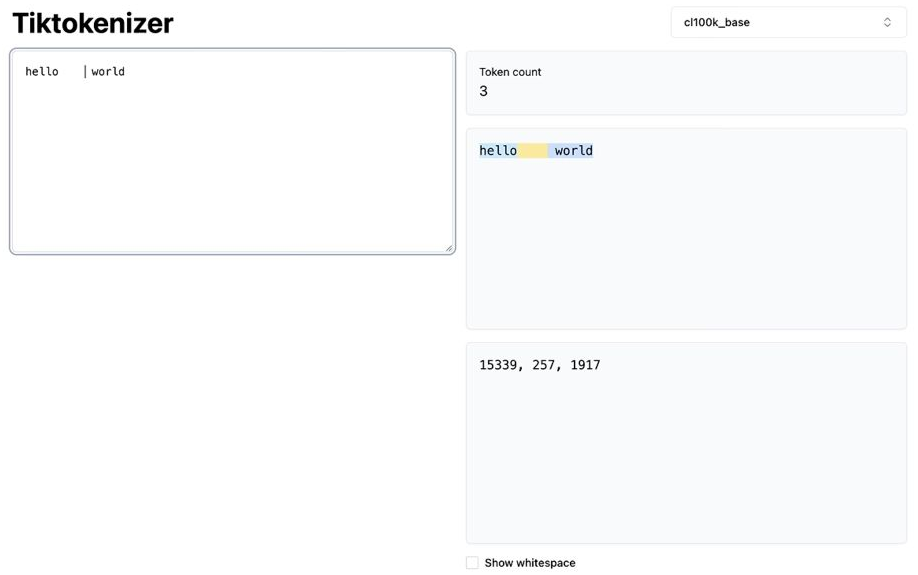
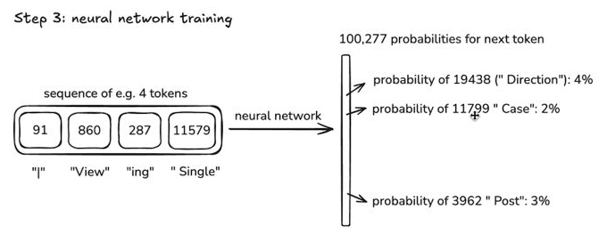
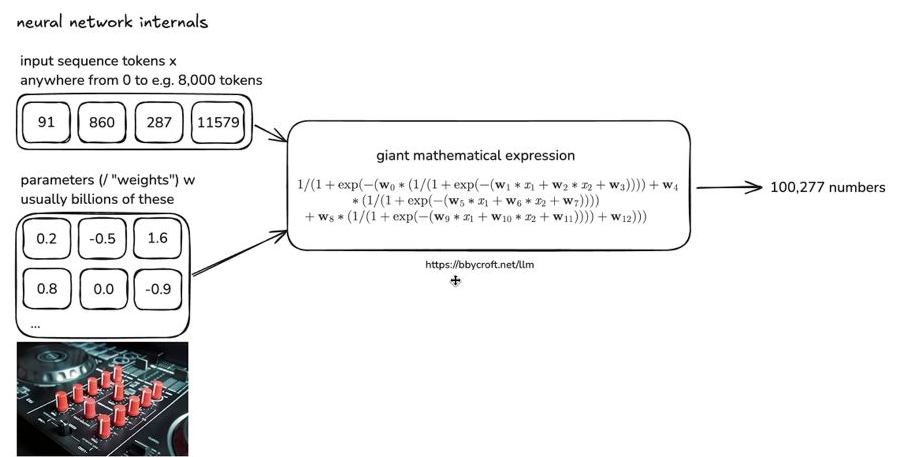
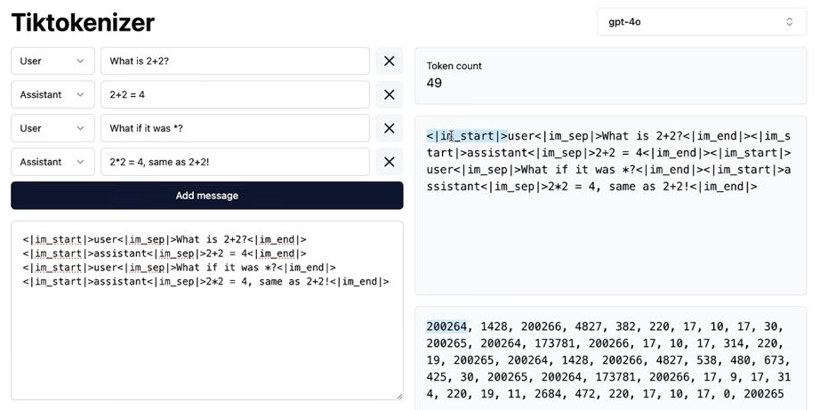
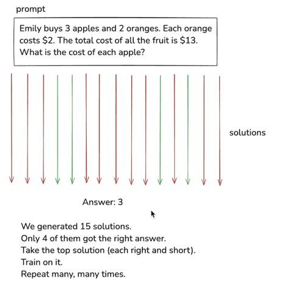
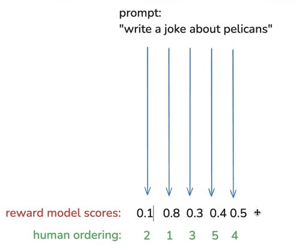

從文字框開始：我們究竟在和什麼互動？ 導讀 這堂課的起點是使用者的困惑：同一個文字框，為什麼能寫出很好的答案，又會犯看似幼稚的錯？因此先把這個問題留著，沿著建造模型的過程逐步回答。這裡的開場不是可刪的寒暄，它決定了後面為什麼要理解資料、訓練與模型限制。
第一站是預訓練。模型開始學習之前，先要有大量、多樣而且品質合適的文字。FineWeb 是這堂課拿來觀察實際材料的例子；它不是所有公司的共同資料庫，提到的容量也不是所有模型的固定規格。
課程內文 · 中文整理稿全文重排
001 大型語言模型入門：從文字框到預訓練資料收集大家好，我其實已經想拍這支影片很久了。這是一支面向一般觀眾、但內容相當完整的大型語言模型介紹影片，以 ChatGPT 為例。我希望透過這支影片，給大家一些思考這個工具本質的心智模型。它顯然在某些方面非常神奇、令人驚嘆，在某些事情上表現出色，但在另一些事情上則不太擅長，同時也有許多需要留意的尖銳邊角。那麼，這個文字框背後到底發生了什麼？你可以在裡面輸入任何東西然後按下 Enter，但我們到底應該放什麼進去？
那些被生成回來的文字又是什麼？它是怎麼運作的？你究竟在和什麼東西對話？我希望在這支影片中涵蓋所有這些主題。我們會走過整個建構管線，但會盡量讓內容對一般觀眾保持可親近。所以，讓我們先來看看如何建構一個像 ChatGPT 這樣的系統，沿途我也會談到這些工具在認知和心理層面上的些許意涵。好，讓我們來建構 ChatGPT。整個過程會依序安排多個階段，第一個階段稱為「預訓練階段」，而預訓練的第一步就是下載並處理網際網路上的資料。
為了對這一步的大致樣貌有個概念，我推薦大家看看這個網址：一家名為 Hugging Face 的公司收集、建立並策劃了一個叫做 FineWeb 的資料集，他們在一篇部落格文章中詳細說明了如何建構這個資料集。而 OpenAI、Anthropic、Google 等所有主要的大型語言模型供應商，內部都會有類似 FineWeb 資料集的對應版本。我們在這裡大致想要達成什麼目標呢？
我們想從公開可用的來源中取得大量文字，擁有數量龐大且品質極高的文件，同時也要有非常廣泛的文件多樣性，因為我們希望這些模型內部蘊含大量的知識。也就是說，我們需要大量高品質、高多樣性的文件，而且數量要非常多。要做到這一點其實相當複雜，正如你所見，需要經過多個階段才能做好。FineWeb 資料集相當能代表生產級應用中會看到的規模，最終大約只有 44 兆位元組的磁碟空間。
你可以很容易買到一支 1 兆位元組的 USB 隨身碟，或者說，這整個資料集今天幾乎可以塞進一顆硬碟裡。
承接 接下來把「大量資料」拆開：資料怎麼來，又是怎麼被選擇的？
網路資料經過哪些選擇，才成為訓練材料？ 導讀 Common Crawl 提供爬取網頁的起點，但原始網頁與可用的訓練文字之間，隔著一連串處理：排除網址、擷取正文、辨識語言、品質篩選、去除重複與處理個人資訊。這些步驟會影響模型有機會學到什麼。
英文比例門檻、西班牙文被過濾的假設，以及龍捲風與腎上腺的網頁例子，都有教學用途：前兩者說明資料選擇會留下能力差異，後兩者讓抽象的「訓練集」變成看得見的文章。流程有過濾個資這一步，不等於已證明所有個資都被清乾淨。
課程內文 · 中文整理稿全文重排
002 Common Crawl 作為主要數據來源與網頁爬取流程最終來說，這其實不算大量的數據，儘管互聯網非常非常龐大。我們處理的是文字，而且我們會進行積極的篩選，所以在這個例子中，我們最終大約得到 44 TB 的數據。讓我們來看看這些數據長什麼樣子，以及這些階段大概是怎麼運作的。許多這類工作的起點，也是最終貢獻最多數據的來源，就是 Common Crawl 的數據。Common Crawl 是一個組織，從 2007 年開始就在不斷地爬取互聯網。
以 2024 年為例，Common Crawl 已經索引了 27 億個網頁，他們有各種各樣的爬蟲在互聯網上運行。基本上，你會從幾個種子網頁開始，然後跟隨所有的連結，不斷地跟隨連結，不斷地索引所有資訊，最終你就會得到大量隨時間累積的互聯網數據。這通常是許多這類工作的起點。
003 數據篩選與處理管線現在，Common Crawl 的數據相當原始，會以很多不同的方式進行篩選。他們有記錄這些階段的處理流程。第一個階段是 URL 篩選，這指的是有一些封鎖清單，基本上是你不想要從中獲取數據的 URL 或域名。這通常包括惡意軟體網站、垃圾郵件網站、行銷網站、種族主義網站、成人網站等等。有各種各樣的網站在這個階段就被排除了，因為我們不想要它們出現在數據集中。第二個部分是文字提取。
要記住，這些網頁保存的是原始 HTML，當我們去檢視時，你會看到裡面有大量的標記，像是列表之類的，還有 CSS 等等，這幾乎就是這些網頁的電腦程式碼。但我們真正想要的只是文字，我們只想要這個網頁的文字內容，不想要導覽列之類的東西。所以有大量的篩選、處理和啟發式方法，用來適當篩選出這些網頁中好的內容。下一個階段是語言篩選。例如，FineWeb 使用語言分類器，試圖猜測每一個網頁的語言，然後只保留英文比例超過 65% 的網頁。
004 資料集預處理與語言過濾由此可以看出，這是一個讓不同公司自行決定的設計選擇：我們要在資料集中納入多少比例的不同語言？舉例來說，如果我們把所有西班牙語都過濾掉，那麼模型日後在西班牙語上的表現很可能就不太好，因為它幾乎沒有見過該語言的資料。因此，不同公司可以將多語言表現的重視程度設定得高低不同。以 FineWeb 為例，它相當側重英文，所以如果他們日後訓練語言模型，該模型在英文上會非常出色，但在其他語言上可能就不那麼好了。
在語言過濾之後，還有幾個其他的過濾步驟，例如去重（deduplication）等，最後以移除 PII（個人可識別資訊）作結。PII 指的是個人可識別資訊，例如地址、社會安全號碼之類，我們會嘗試偵測這些內容，並將包含此類資訊的網頁從資料集中剔除。這裡有非常多的階段，我不會逐一細說，但這確實是預處理中相當廣泛的一部分。最終我們得到的就是 FineWeb 資料集。
當你點進去查看時，可以看到一些實際的範例。任何人都可以在 Hugging Face 的網頁上下載這個資料集。這裡展示了一些最終進入訓練集的文本範例：一篇關於 2012 年龍捲風的文章，描述了 2020 年和 2012 年發生的龍捲風事件；下一篇則是一篇頗為奇特的醫學文章，開頭寫著「你知道你身體裡有兩顆只有九伏特電池大小的黃色腎上腺嗎？」你可以把這些想像成基本上就是網際網路上的網頁，只是經過各種方式過濾後只保留了文字。現在我們擁有了大量的文本，總共 40 兆位元組，而這就是這個階段下一步的起點。
承接 得到文字以後，還有另一個問題：神經網路如何接收這些文字？
從文字、位元到 token：為什麼要分詞？ 導讀 先想像把數百個網頁接成一條很長的文字序列。用 0、1 表示時，符號種類少，序列卻非常長；把 8 個位元組成一個位元組，符號種類變成 256 種，序列縮短。BPE 再反覆合併常見的相鄰符號，繼續交換「較大的符號表」與「較短的序列」。
token（詞元）因此不是天然等於一個字，也不是天然等於一個單字；它是分詞器定義的文字片段。編號用來辨識片段，不表示語意大小。實際分詞示範又把空白、大小寫與拼接方式放進來，提醒我們：人眼看來很小的變化，也可能改變模型接收到的序列。這個差異會在後面的拼字題再次出現。
課程內文 · 中文整理稿全文重排
005 為神經網路表示文本我想讓大家對我們目前所處的位置有一個直覺上的理解。我取了前面 200 個網頁——記得我們有海量的網頁——把其中所有的文字全部取出，然後拼接在一起。這就是我們最終得到的東西：純粹的原始文本，原始的網際網路文字，即使只是這 200 個網頁，數量也已經非常龐大了。如果我繼續縮小視角，就會看到這是一整片巨大的文本織錦。這些文本數據中充滿了各種模式，而我們現在要做的，就是開始用這些數據來訓練神經網路，讓神經網路能夠內化並建模這些文本的流動方式。也就是說，我們手上有這一大片文本紋理，現在要讓神經網路去模仿它。
006 文字表示與位元編碼在將文字輸入神經網路之前，我們必須決定如何表示這些文字，以及如何將其餵入模型。神經網路的運作方式是，它們期望接收一維的符號序列，而且這些符號必須屬於一個有限的集合。因此，我們需要決定什麼是「符號」，然後將資料表示為這些符號的一維序列。目前我們擁有的就是一維的文字序列，它從這裡開始，到這裡結束，再繼續到這裡，以此類推。雖然在螢幕上，文字是以二維的方式排列的，但它本質上是從左到右、從上到下的一維序列。
既然這是電腦，當然存在底層的表示方式。如果我們對這段文字進行 UTF-8 編碼，就能得到電腦中對應這段文字的原始位元（bits）。舉例來說，最前面的這一段就是前八個位元。從某種意義上說，我們此時恰好只有兩種可能的符號——零和一——而序列非常長。
007 詞彙大小與序列長度的取捨在神經網路中，序列長度實際上是一種非常有限且珍貴的資源。我們不希望擁有極長的、僅由兩種符號組成的序列。相反地，我們希望在詞彙（vocabulary）的符號大小與最終的序列長度之間做出取捨——我們希望有更多的符號和更短的序列。一種簡單壓縮序列長度的方式，是將連續的位元分組，例如每八個位元組合成一個「位元組」（byte）。由於這些位元只有開或關兩種狀態，八個位元組在一起只有 256 種可能的組合。
因此，我們可以將這個序列重新表示為位元組的序列。這樣，序列長度縮短為原本的八分之一，但現在我們有 256 種可能的符號，每個數字的範圍從 0 到 255。我強烈建議你不要把這些當作數字來理解，而是把它們視為獨立的 ID，或者說獨特的符號。也許更直觀的說法是，把每一個位元組都替換成一個獨特的 emoji。這樣你就會得到一串 emoji 的序列，而總共有 256 種可能的 emoji，你可以這樣來理解它。
008 位元組對編碼與 GPT-4 的分詞機制在實際生產環境中，對於最先進的語言模型，我們其實還需要做得更多。我們希望繼續縮短序列的長度，因為序列長度是一種珍貴的資源，而代價則是詞彙表中的符號數量會增加。實現這個目標的方式，就是執行所謂的「位元組對編碼」（Byte Pair Encoding）演算法。這個演算法的基本原理是：我們尋找連續出現且非常常見的位元組或符號組合。舉例來說，序列 116 後面跟著 32 這個組合相當常見，出現頻率非常高。
於是我們就把這對符號歸併成一個新符號，為它分配一個 ID 256，然後將所有 116-32 的組合都替換成這個新符號。我們可以反覆迭代這個演算法，次數不限，每當我們創造一個新符號，序列長度就會減少，而符號表的大小就會增加。在實務上，一個相當合理的詞彙表大小設定大約是十萬個符號。具體來說，GPT-4 使用了 100,277 個符號。這個將原始文字轉換為這些符號——也就是我們所稱的「token」——的過程，就被稱為「分詞」（tokenization）。
編者示意 · 只演示一次合併，不代表真實模型的分詞結果
用 banana 試想：把重複的相鄰組合 a + n 合成一個符號。
b a n a n a
目前 6 個符號；這個例子的符號表是 b、a、n。
合併 a + n
009 使用 TikTokenizer 工具探索分詞過程接下來，我們來看看 GPT-4 是如何進行分詞的，也就是從文字到 token、再從 token 還原為文字的過程，實際看起來是什麼樣子。我喜歡用一個網站來探索這些 token 的表示方式，叫做 TikTokenizer。進入網站後，在下拉選單中選擇「CL100K base」，這就是 GPT-4 基礎模型所使用的分詞器。在左側輸入文字，它就會顯示該文字的分詞結果。
例如輸入「hello world」，結果恰好是兩個 token：「hello」對應 ID 15339，「world」對應 ID 11917。但如果我把這兩個詞合併成「helloworld」，結果又是兩個 token，只是變成了「h」和「l world」（沒有前面的 h）。如果我在「hello」和「world」之間放兩個空格，分詞結果又會不同，會出現一個新的 token 220。
你可以自己動手試試看，觀察各種變化。另外要記住，這個分詞是區分大小寫的，所以如果 H 是大寫，結果就會不一樣；如果輸入的是「hello world」中間帶空格，結果反而會變成三個 token，而不是兩個。你可以多玩一玩，對這些 token 的運作方式建立一種直覺性的理解。我們稍後在影片中還會再回到分詞這個主題。
原影片畫面 · 13:23

點圖放大 ↗ 空白也會改變 token 的切法 對照左邊文字、右邊色塊與下方編號：多加空白，也可能改變 token 序列。圖中是當時的 cl100k_base 分詞器，並非所有模型共用的切法。
回看此畫面 13:23 ↗ 來源：Andrej Karpathy · Deep Dive into LLMs like ChatGPT。擷取教學區域；圖說為編者導讀。 010 詞元化與資料集規模目前，我想先帶大家看看這個網站，並展示一下這些文字在最終呈現時是怎麼運作的。舉例來說，如果我從這裡取一行文字，這就是 GPT-4 所看到的樣子。這段文字會被表示為長度 62 的序列，這裡就是該序列，而這些文字區塊就對應到這些符號。同樣地，總共有 100,277 個可能的符號，我們現在擁有的就是這些符號的一維序列。我們之後會再回到詞元化的主題，但這就是我們目前的進度。
好，接下來我所做的事情是，將資料集中的這段文字序列，用我們的詞元化器重新表示為詞元序列，這就是它現在看起來的樣子。舉例來說，回到 FineWeb 資料集，他們提到這不僅僅是 44 太位元的磁碟空間，而是大約 15 兆個詞元的序列。這裡展示的只是前幾千個詞元，但總共有 15 兆個詞元需要記住。再強調一次，這些詞元代表的都是小小的文字區塊，它們都是這些序列的「原子」，而這裡的數字本身沒有意義，它們只是獨立的 ID。
承接 token 準備好了。下一步不是直接寫答案，而是學會預測下一個 token。
預測下一個 token：訓練到底在調整什麼？ 導讀 從訓練資料取出一小段作為上下文，把緊接在後面的 token 當作已知答案。模型的輸出不是只有一個詞，而是對整個詞彙表中各個候選 token 的機率。初始猜測很差，再用已知答案提供的訊號調整參數，讓預測逐漸符合資料中的規律。
這裡的機率數字是示意，目的是分清三件事：輸入是前面的序列，訓練答案來自資料，更新的是模型參數。大量視窗與批次把同一種學習過程擴大；「預測下一個 token」描述的是訓練目標，不代表它只看最後一個字。
課程內文 · 中文整理稿全文重排
011 神經網路訓練與下一個詞元預測好，現在我們來到有趣的部分，也就是神經網路訓練，這是在計算上需要大量運算的地方。在這個步驟中，我們想要建模這些詞元在序列中如何彼此跟隨的統計關係。我們從資料中隨機取一段詞元視窗，視窗長度可以從零個詞元到我們決定的某個最大值。實務上，你可能會看到 8,000 個詞元的視窗。原則上我們可以使用任意長度的視窗，但處理非常長的序列會非常耗費運算資源，所以我們就決定取 8,000、4,000 或 16,000 作為上限。
在這個例子中，我取前四個詞元，這樣一切都能整齊地呈現。我們取四個詞元的視窗：this、bar、view、in，以及 space、single，這些就是對應的詞元 ID。現在我們要做的事情，基本上是預測序列中下一個詞元。所以 3962 是下一個，對吧？我們把這個稱為「上下文」（context）。
012 神經網路的輸入與輸出這四個 token 構成上下文，它們被送入神經網路，這就是神經網路的輸入。稍後我會詳細說明這個神經網路內部發生了什麼，但現在重要的是理解神經網路的輸入和輸出。輸入是長度可變的 token 序列，範圍從零到某個最大值，例如 8,000。輸出則是對下一個 token 的預測。由於我們的詞彙表有 100,277 個可能的 token，神經網路會輸出恰好這麼多數字，而這些數字各自對應該 token 作為序列中下一個出現的機率。也就是說，它正在猜測接下來會是什麼。
原影片畫面 · 18:03

點圖放大 ↗ 模型輸出的是下一個 token 的機率 順著箭頭看：一串輸入 token，會得到各個候選下一個 token 的機率。右邊列出的百分比只是示例；模型還沒有一次寫出整段答案。
回看此畫面 18:03 ↗ 來源：Andrej Karpathy · Deep Dive into LLMs like ChatGPT。擷取教學區域；圖說為編者導讀。 013 透過機率更新訓練神經網路在訓練初期，這個神經網路是隨機初始化的，我們稍後會看到這意味著什麼，但它本質上是一個隨機轉換。因此，在訓練最開始階段，這些機率也基本上是隨機的。這裡我舉了三個例子，但請記住這裡總共有十萬個數字。這個 token「space direction」，神經網路認為它的機率是 4%；11799 是 2%；而 3962，也就是「post」，機率是 3%。當然，我們是從資料集中抽取這個窗口的，所以我們知道接下來是什麼，這就是標籤。
我們知道正確答案是 3962 確實是序列中的下一個。於是我們就擁有了對神經網路進行更新的數學過程，我們有調整它的方法。稍後我會稍微詳細說明，但基本上，我們知道這裡 3% 的機率，我們希望這個機率變高，同時希望所有其他 token 的機率變低。因此我們有一種數學方法來計算如何調整和更新神經網路，讓正確答案的機率稍微提高。如果我對神經網路做一次更新，那麼下次我把這四個 token 的序列送入神經網路時，神經網路會稍微調整，然後它會說，好的，「post」可能是 4%，「case」現在可能是 1%，「direction」可能變成 2% 之類的。
我們就有一種方式來輕微地推動、稍微更新神經網路，基本上讓序列中下一個正確 token 的機率變高。現在你只需要記住，這個過程不僅僅發生在這一個 token 上——就是這四個輸入預測這一個輸出——這個過程是同時對整個資料集中的所有 token 發生的。
014 神經網路的訓練過程在實際操作中，我們會抽取小窗口、小批次的窗口，然後在每一個 token 上，我們都希望調整神經網路，使得該 token 的機率稍微提高。這一切都在大量 token 批次中平行進行。這就是訓練神經網路的過程——一系列更新操作，讓它的預測與訓練集中實際發生的統計規律相匹配，讓它的機率與這些 token 在數據中如何彼此跟隨的統計模式保持一致。
編者圖解 · 訓練時，答案來自原始資料 前面的 token 給模型一段上下文 下一個 token 的機率 模型對不同接續作出預測 對照資料中的下一個 token 用誤差調整參數，繼續下一批 推論時不做這個答案對照與參數更新，而是選出下一個 token，接回上下文後繼續生成。
承接 知道輸入和輸出之後，再往裡面看：被調整的參數在哪裡？
Transformer 內部：輸入與參數如何共同產生預測？ 導讀 把參數想像成調音台上的旋鈕：同一段輸入，在不同的旋鈕設定下會得到不同預測。神經網路把輸入與權重帶入大量數學運算，訓練則尋找能反映資料規律的參數設定。這個類比連起了上一章的「更新機率」與底層的「改變參數」。
本章刻意停在直覺層次，沒有完整推導注意力機制或 Transformer 的每個模組。需要帶走的是模型作為參數化函數的觀念，以及「架構」與「學到的權重」不同；人工腦組織的比喻則不代表它與生物大腦具有相同機制。
課程內文 · 中文整理稿全文重排
015 神經網路內部結構：輸入、參數與數學表達式現在讓我們簡要進入這些神經網路的內部，讓你對裡面有什麼有個概念。如我所說，我們有這些輸入，也就是 token 的序列。在這個例子中是四個輸入 token，但這可以是零到八千個 token 之間的任何數量。原則上，這可以是無限個 token，只是處理無限個 token 在計算上太昂貴了，所以我們會在某個長度處截斷，這就成為該模型的最大上下文長度。現在這些輸入 X 會與神經網路的參數（也就是權重）一起，混入一個巨大的數學表達式中。
這裡我展示了六個參數示例及其設定，但實際上，現代神經網路會有數十億個這樣的參數。在最初，這些參數是完全隨機設定的。在參數隨機設定的情況下，你可能預期這個神經網路會做出隨機預測，而事實確實如此——一開始，它的預測完全是隨機的。但正是通過這個反覆更新網路的過程——我們稱之為訓練神經網路——這些參數的設定會被調整，使得神經網路的輸出與訓練集中觀察到的模式保持一致。
你可以把這些參數想像成 DJ 調音台上的旋鈕，當你轉動這些旋鈕時，你對每一個可能的 token 序列輸入都會得到不同的預測。而訓練神經網路，就是發現一組與訓練集統計規律一致的參數設定。讓我給你們一個例子，看看這個巨大的數學表達式長什麼樣子，讓你有個感覺。現代網路是包含數萬億項的巨大表達式，大概如此。但讓我這裡展示一個簡單的例子，它看起來大概是這樣的。我的意思是，這些就是那類表達式，只是讓你知道它沒有那麼可怕。
016 神經網路的基本運作與 Transformer 架構我們有輸入 x，例如 X1、X2，在這個例子中有兩個輸入，它們會與網路的權重 W0、W1、W2、W3 等進行混合。這種混合就是乘法、加法、指數、除法之類的簡單運算。而神經網路架構研究的課題，就是設計出具有許多便利特性的有效數學表達式，例如具有表達力、可優化、可並行化等。但說到底，這些並不是複雜的表達式。基本上，它們將輸入與參數混合以做出預測，而我們優化的正是這個神經網路的參數，讓預測結果與訓練集保持一致。
原影片畫面 · 23:10

點圖放大 ↗ 輸入與參數，一起決定模型的輸出 上方是這次提供的輸入，下方是訓練得到的參數。兩者經過運算產生輸出。中間的公式是原課程的直覺示意，並不是完整的 Transformer 計算公式。
回看此畫面 23:10 ↗ 來源：Andrej Karpathy · Deep Dive into LLMs like ChatGPT。擷取教學區域；圖說為編者導讀。 017 Transformer 作為參數化數學函數這些神經元本質上是無狀態的，與生物神經元相比非常簡單。不過，你仍然可以大致把它們想像成一小塊人工的腦組織，如果你喜歡這樣思考的話。資訊流經所有這些神經元，不斷觸發，直到我們得到預測結果。我其實不會花太多時間去講這些轉換的精確數學細節，老實說，我覺得深入那些細節並不是那麼重要。真正重要的是要理解：這是一個數學函數，它由一組固定的參數來參數化，比方說八萬五千個參數，而它的本質就是將輸入轉換為輸出。
當我們調整這些參數時，就會得到不同類型的預測。接著，我們需要找到一組好的參數設定，讓預測結果與訓練集中觀察到的模式相吻合。這就是 Transformer。
承接 訓練把參數調好之後，使用模型產生文字，是另一個階段。
推論：一次接上一個 token，答案才逐漸長出來 導讀 給模型一段開頭，取得下一個 token 的機率分布，從中選出一個，再把它接回序列；如此重複，文字就逐步生成。若使用抽樣，同一段開頭也可能走向不同續文。訓練時已知下一個 token，推論時則是在產生新的續接。
因此，生成文字不必與某篇訓練文章完全相同，也可能偶爾重現熟悉片段。它是依學到的規律逐步接續，並非每次都在資料庫中查出一份現成答案。先理解這個過程，才容易看懂後面的基礎模型示範。
課程內文 · 中文整理稿全文重排
018 推論：從模型生成新資料我已經展示了神經網路的內部結構，也稍微談到了訓練的過程。接下來我想介紹一個與這些網路合作時的重要階段，那就是「推論」。在推論階段，我們做的是從模型中生成新資料，基本上就是看看模型在參數中內化了哪些模式。從模型生成資料的過程其實相當直觀：我們先準備一些 token 作為前綴，也就是你想開始的內容。假設我們想以 token 91 開始，我們就把它餵進網路，而記得網路會給我們一個概率向量。
接下來，我們就可以翻一枚有偏的硬幣，根據這個概率分布來抽樣一個 token。模型給予高概率的 token，在抽樣時被選中的機率就比較高，你可以這樣理解。我們從分布中抽樣得到一個唯一的 token，例如 token 860 可能是下一個。860 是一個相對可能的 token，但未必是唯一可能的選擇，可能還有許多其他 token 可以被抽到，只是 860 在這個例子中是一個相對高概率的選項。
事實上，在我們的訓練範例中，860 確實跟在 91 後面。現在讓我們繼續這個過程：91 之後是 860，我們把它接上去，然後再次詢問第三個 token 是什麼。我們抽樣，假設得到 287，正如這裡所示。我們再重複一次：現在我們已經有三個 token 的序列，我們詢問第四個最可能的 token 是什麼，然後從分布中抽樣，得到這個結果。
019 推論的隨機性與 Token 生成機制現在讓我們再執行一次。我們取出那四個 token，進行取樣，結果得到的是 13659，而不是之前出現的 3962。這個 token 對應的是「article」這個詞，也就是「瀏覽單一文章」的意思。所以在這個案例中，我們並沒有完全重現訓練資料中出現過的那段序列。請記住，這些系統本質上是隨機的。我們在做取樣，就像在擲硬幣，有時候我們會「鎖住」並重現訓練集中的一小段文字，但有時我們取到的 token 並非訓練資料中任何文件的逐字內容。
因此，我們會得到訓練資料的各種「混音」版本，因為在每一步中我們都可能擲出不同的 token，而一旦那個 token 被選中，接著再取樣下一個，如此一來，你很快就會生成與訓練文件中 token 序列非常不同的 token 串流。從統計學上來說，它們會具有相似的性質，但並不完全等同於你的訓練資料，它們更像是受到訓練資料的啟發。在這個案例中，我們得到了一個略有不同的序列。
為什麼會取到「article」呢？你可以想像，在「bar viewing single」這樣的上下文中，「article」是一個相對合理的 token。你可以想像在訓練資料的某些文件中，「article」這個詞確實跟隨過類似的上下文窗口，而我們恰好在那個階段取樣到了它。所以基本上，推論就是從這些分佈中逐一進行預測。我們不斷地將 token 餽回模型並取得下一個，我們始終在擲這些硬幣，而根據我們從這些概率分佈中取樣的運氣好壞，我們可能會得到非常不同的模式。這就是推論。
020 實務管線：預處理、訓練與推論在大多數常見的情境中，基本上下載整個網路並進行 tokenization 是一個預處理步驟。你只需要做一次，然後一旦你有了 token 序列，就可以開始訓練網路。在實務上，你會嘗試訓練許多不同類型、不同設定、不同架構和不同規模的網路，所以你會進行大量的神經網路訓練。然後，當你訓練好一個神經網路，擁有一組你滿意的特定參數之後，你就可以拿這個模型進行推論，實際地從模型中生成資料。
當你在 ChatGPT 上與模型對話時，那個模型是 OpenAI 在數個月前就訓練好的，他們擁有一組運作良好的特定權重。
承接 把流程放進一次真正的模型訓練，就能看見抽象概念如何落地。
GPT-2 實例：從訓練紀錄到 GPU 與模型發布 導讀 這一段以重現 GPT-2 為例，把資料、程式、損失下降、生成樣本與運算設備接在一起。訓練初期到後期的文字變化，讓「學到統計規律」有了可觀察的結果；訓練紀錄中的步數與速度，則說明成本如何累積。
接著把尺度拉大到雲端 GPU、供應鏈與大規模算力，最後回到訓練完成後可以發布的基礎模型。這整段不是單純的硬體支線：它回答了模型為什麼需要大量前期建置，以及使用既有模型和自己訓練模型的工作量有何不同。影片中的成本與硬體數字是當時的例子。
課程內文 · 中文整理稿全文重排
021 推論與 GPT-2：第一個可辨識的現代 Transformer 架構當你與模型對話時，背後發生的全部過程都只是推論（inference），不再有任何訓練。那些參數被固定下來，你只是在跟模型說話——你給它一些 token，它便完成 token 序列，而你在 ChatGPT 上看到的那些生成內容，正是這個過程的產物。所以，模型在實際使用時，純粹只做推論。接下來，讓我們看一個具體的訓練與推論範例，讓你對這些模型被訓練時實際長什麼樣子有個直觀的感受。
我特別喜歡、也特別想拿來說明的例子，就是 OpenAI 的 GPT-2。GPT 代表 Generatively Pre-trained Transformer，也就是生成式預訓練 Transformer，這是 OpenAI GPT 系列的第二個版本。今天你跟 ChatGPT 對話時，底層支撐所有魔法的模型是 GPT-4，也就是該系列的第四代。GPT-2 於 2019 年由 OpenAI 發表，論文就在我手邊。
我喜歡 GPT-2 的原因是，它是第一個以現代標準來看、所有組件都能被辨識出來的完整架構——只是如今一切都變得更大了。
022 GPT-2 的關鍵規格與現代標準的對比我當然沒辦法把這篇技術論文的每個細節都講完，但有幾個重點我想特別提出。GPT-2 是一個 Transformer 神經網路，跟你今天使用的那種本質上相同。它擁有 16 億個參數，也就是我們前面討論過的那些參數，總共 16 億個。而今天的現代 Transformer，參數量已經接近一兆，或者至少幾百億。GPT-2 的最大上下文長度是 1,024 個 token，意思是從資料集中取樣時，每次取出的 token 窗口不會超過 1,024 個；當你要預測序列中的下一個 token 時，你手邊最多只有 1,024 個 token 的上下文可供參考。
以現代標準來看，這也極其微小——今天的上下文長度已經接近幾十萬，甚至可能達到一百萬個 token，因此你能擁有更多的歷史脈絡，做出更精準的下一個 token 預測。最後，GPT-2 大約是在 1,000 億個 token 上訓練的，這在現代標準下也算相當小。就像我前面提到的，我們看過的 FineWeb 資料集有 15 兆個 token，相比之下 1,000 億確實很小。
其實，我為了好玩，在一個叫做 lm.c 的專案中嘗試重現了 GPT-2，你可以在 GitHub 上 lm.c 的相關貼文中看到我的執行紀錄。
023 GPT-2 訓練成本的下降在 C 儲存庫中，2019 年訓練 GPT-2 的成本估計約為四萬美元，但如今你可以做得比那好得多。具體來說，這裡大約花了一天時間和六百美元，而這甚至還沒有太費力氣，我認為今天真的可以把它壓到一百美元左右。那麼，為什麼成本會下降這麼多呢？首先，這些資料集變得更好了，我們過濾、提取和準備資料的方式也變得更加精緻，因此資料集的品質大幅提升，這是其中一個原因。但真正最大的差異在於，我們的電腦在硬體方面變得快了很多，我們稍後會詳細探討這一點。
此外，用來運行這些模型、盡可能從硬體中擠出所有速度的軟體，也因為所有人都專注於這些模型並試圖非常快速地運行它們，而變得更好了。
024 訓練 GPT-2 模型的實際體驗我無法深入講解這個 GPT-2 重現的全部細節，這是一篇很長的技術文章，但我還是想給你一個直覺上的感受，讓你知道作為研究者實際訓練其中一個模型是什麼樣子的——你在看什麼？它看起來怎樣？感覺如何？讓我稍微給你一點感覺。好，這就是它看起來的樣子，讓我把它滑過來。我現在正在訓練一個 GPT-2 模型，這裡發生的是，每一行，比如這一行，都是對模型的一次更新。記得我們基本上是在讓每一個 token 的預測變得更好，並更新神經網路的這些權重或參數。
所以這裡每一行都是對神經網路的一次更新，我們稍微改變它的參數，讓它更擅長預測下一個 token 和序列。具體來說，這裡每一行都是在改善訓練集中一百萬個 token 的預測。我們基本上從這個資料集中取出一百萬個 token，並同時嘗試改善這一百萬個 token 在序列中作為下一個出現的預測。而在每一個這樣的步驟中，我們都在對網路進行一次更新。現在，需要密切關注的數字是這個叫做「loss」（損失）的數字。
損失是一個單一數字，告訴你你的神經網路目前表現得如何，它的設計方式是損失越低越好。你會看到，隨著我們對神經網路進行更多更新，損失在下降，這對應著在序列中預測下一個 token 時做出更好的預測。所以，損失就是作為神經網路研究者你所關注的數字。
025 訓練進度與推論輸出編者註 · 數字校正 這段的進度與總量換算有不一致：20 ÷ 32,000 = 0.0625%，不是 1%；1,000,000 × 32,000 = 320 億。這是按原稿所列數字重新計算，尚未核對影片當時的訓練日誌。
你大概就是在等著，搓搓手、喝著咖啡，確認一切看起來正常，確保每次更新後損失函數都在改善、網路的預測能力越來越強。現在你看到的是，我們每次更新處理一百萬個 token，每次更新大約花七秒鐘，總共要跑三萬兩千步的優化。三萬兩千步、每步一百萬個 token，大約是三百三十億個 token 要處理。目前我們才跑到第 20 步，總共三萬兩千步，所以才剛完成一點多一點，因為我才跑了大概十到十五分鐘。
每 20 步我設定了一次推論，所以你看到的是模型在預測序列中的下一個 token，你隨機開始，然後不斷把 token 接上去。每次你看到新東西出現，就是一個新 token。你看，這還不太連貫，但記得這才只完成了訓練的 1%，模型還不太擅長預測下一個 token。出來的東西其實有點像胡言亂語，但還是有一點點局部連貫性，比如：「Since she is mine, it's a part of the information should discuss my father great companions Gordon showed me sitting over at and etc.」我知道看起來不太好，但我們往上捲看看剛開始優化時是什麼樣子，在第 1 步的時候。
經過 20 步優化後，你看到這裡得到的東西看起來完全隨機，當然這是因為模型只更新了 20 次參數，所以給你隨機文字，因為它就是一個隨機網路。但跟這個比起來，模型已經開始做得好很多了。確實，如果我們等完整的三萬兩千步跑完，模型會改善到能產生相當連貫的英文，token 也能正確地流式輸出，整體的英文構句會好很多。所以這大概還要再跑一兩天，在這個階段我們就確認損失在下降、一切看起來正常，然後就是等。
026 運算故事：硬體與雲端基礎設施現在讓我轉到運算所需的故事。因為當然我不是在我的筆記型電腦上跑這個優化，那會貴到不行，因為我們得跑這個神經網路、得改善它、需要所有這些資料等等。
027 租用雲端 GPU 訓練大型模型你無法在自己的電腦上跑這麼大的網路，因為規模實在太大了。所以這些訓練工作都是在雲端的電腦上執行的。我想來談談訓練這些模型時，運算端到底長什麼樣子。我目前用來跑這個最佳化程序的，是一台配備八張 H100 的節點，也就是一台電腦裡裝了八張 H100 GPU。我現在是租用的，這台電腦在雲端的某個地方，我甚至不知道它物理上到底在哪裡。我比較喜歡從 Lambda 租用，不過提供這類服務的廠商還有很多。
你往下捲動可以看到，他們有針對配備 H100 GPU 的機器提供按需計價，例如八張 Nvidia H100 GPU 的機器，每張 GPU 每小時三美元。你租到之後，就能在雲端拿到一台機器，進去訓練這些模型。這些 GPU 長這樣，這就是一張 H100 GPU 的外觀，你把它插進電腦裡就行。GPU 之所以特別適合訓練網路，是因為訓練過程計算量極大，但同時具有高度的並行性，你可以讓許多獨立的運算單元同時工作，來解決訓練神經網路底層的那些矩陣乘法。
028 GPU 淘金熱與下一個 Token 預測這只是一張 H100，但實際上你會把多張放在一起。你可以把八張疊成一個節點，再把多個節點組成一整個資料中心或一整套系統。從一張 GPU 到八張 GPU，到單一系統，再到許多系統，這就是大型資料中心的樣貌，當然價格也貴得多。現在發生的事情是，所有大型科技公司都極度渴望這些 GPU，因為它們可以用來訓練各種語言模型，而這些模型非常強大。這正是推動 Nvidia 股價衝上三兆四千億美元的根本原因，也是 Nvidia 股價爆發式成長的背後推手。
這就是一場淘金熱，淘金熱的核心就是搶到足夠多的 GPU，讓它們協同運作來執行這個最佳化程序。而它們到底在幹嘛呢？它們全部在協作預測資料集上的下一個 token，例如 FineWeb 資料集。這整套運算流程，成本極其高昂。
029 為什麼 GPU 算力如此重要你擁有的 GPU 越多，就能嘗試預測和改進的 token 就越多，處理資料集的速度也越快，迭代速度更快，能訓練更大的網路，如此循環往復。這就是那些機器正在做的事情，也是為什麼這一切都如此重要。舉例來說，大約一個月前的文章提到，伊隆·馬斯克在單一資料中心部署了十萬顆 GPU，這些 GPU 極其昂貴，需要消耗大量電力，而它們所做的就是預測序列中的下一個 token，並藉此改進網路，從而獲得比我們目前看到的更連貫的文字，而且速度更快。
030 基礎模型與模型發布不幸的是，我沒有幾千萬甚至幾億美元來訓練這樣一個大型模型，但幸運的是，我們可以轉向那些大型科技公司，它們定期訓練這些模型，並在訓練完成後發布其中一些。它們花費了巨額算力來訓練這個網路，然後在優化結束時發布該網路，這非常有用，因為它們已經完成了大量的計算工作。許多公司定期訓練這些模型，但實際上沒有多少公司會發布所謂的「基礎模型」。訓練結束後出來的模型就是基礎模型。
基礎模型是什麼？它是一個 token 模擬器，一個網路文字 token 模擬器。這本身還不夠有用，因為我們想要的是所謂的「助手」——我們想提問並得到回答。這些模型做不到這一點，它們只是創造網路的混音，夢見網路頁面。因此，基礎模型並不常發布，因為它們只是我們仍需採取的幾個步驟中的第一步。不過，確實有一些發布案例。例如，GPT-2 模型在 2019 年發布了 15 億參數的模型，這是一個基礎模型。
那麼，模型發布是什麼樣子的？發布這些模型需要什麼？基本上需要兩樣東西。第一，我們需要 Python 程式碼，通常是用來詳細描述模型中操作序列的。如果你還記得，這個 Transformer 中採取的步驟序列就是由這段程式碼描述的。這段程式碼實現了所謂的神經網路前向傳播。我們需要他們如何連接該神經網路的具體細節。這只是電腦程式碼，通常只有幾百行。
承接 模型訓練好了，卻還不一定是一位助理。先直接觀察基礎模型會做什麼。
基礎模型會接續文字，卻未必會照指令回答 導讀 Llama 3.1 的基礎模型示範包含幾種不同現象：巴黎地標顯示它能接續知識性文字，斑馬段落顯示熟悉文字可能被記住，選舉例子則暴露知識時效與臆造的問題。不能把這些現象全部歸成「記憶」，也不能把流暢的接續等同正確查證。
接著用英韓翻譯配對，展示少樣本提示如何讓模型接續同一種格式；再用對話前綴引導它扮演助理。它也可能連使用者的下一句一起編出來。這正好帶出下一階段的需求：我們希望它穩定回應使用者，而不是自由續寫整篇文字。
課程內文 · 中文整理稿全文重排
031 神經網路參數與 Llama 3 的介紹編者註 · 模型規模校正 原稿後續對 Llama 參數數量的中文換算不一致。Llama 3 論文標示的最大模型為 405B，即 4,050 億參數；不是 405 億或 450 億。核對 Llama 3 論文 ↗
這其實沒有那麼瘋狂，而且這些概念大致上都是可以理解的，通常也是相當標準的做法。真正不標準的是參數，那才是真正有價值的地方。這個神經網路的參數是什麼？因為它有一十六億個參數，我們需要正確的設定，或者說一個非常好的設定。所以這就是為什麼，除了原始碼之外，他們還會釋出參數，在這個案例中大約是一十五億個參數。這些本質上就是數字，也就是一整串包含十五億個數字的清單，是所有旋鈕的精確且良好的設定，讓 token 能夠順利輸出。
所以，你需要這兩樣東西才能獲得一個基礎模型的釋出。GPT-2 雖然已經釋出了，但如我所提到的，那其實是一個相當舊的模型。我們接下來要介紹的模型叫做 Llama 3，這才是我想展示給各位看的。GPT-2 是一十六億參數、在一千億 token 上訓練的模型；而 Llama 3 是一個大得多的、也更現代的模型，由 Meta 釋出並訓練，是一個四百五十億參數的模型，在十五兆 token 上訓練，方式大致相同，只是規模大得多。
Meta 也釋出了 Llama 3 的論文，其中包含大量細節。他們釋出的最大基礎模型是 Llama 3.1 四百零五億參數模型，這就是基礎模型。此外，作為後續章節的伏筆，他們也釋出了指令模型（instruct model），也就是你可以向它提問、它會給你回答的助理。那部分我們之後再談。現在，讓我們先看看這個基礎模型、這個 token 模擬器，來玩玩看、思考一下這到底是什麼東西、它是如何運作的，以及如果你讓這個非常大的神經網路在大量資料上一直跑到最後，最終會得到什麼。
032 使用 Hyperbolic 操作基礎模型與 Token 自動補全我最喜歡用來操作基礎模型的平台是一家叫做 Hyperbolic 的公司，它基本上就是在提供 Llama 3 四百零五億參數基礎模型的服務。當你進入該網站時，你可能需要註冊等程序，請務必確認在模型選項中選擇的是 Llama 3.1 四百零五億基礎模型，一定要是基礎模型。然後在這裡，max tokens 就是我們即將生成的 token 數量，讓我們把它調低一些，以免浪費算力，我們只需要接下來的一百二十八個 token，其他設定保持不變就好，我這裡不會深入講解所有細節。現在，這裡根本發生的事情，與我們推理時發生的事情是完全相同的。
033 模型本質：隨機化的 Token 自動補全所以，這本質上就是延續你給它的前綴 token 序列繼續往下生成。我想先說明的是，這個模型目前還不是一個「助手」。你可以問它「二加二等於幾？」，但它不會回答「哦，等於四，還有什麼我可以幫你的嗎？」它不會這樣做。因為「二加二等於幾」會被 tokenize 成一系列 token，這些 token 只是作為前綴存在，模型接下來做的事情就是計算下一個 token 的機率，然後從中取樣。
它本質上就是一個高級版的自動補全功能——一個非常、非常昂貴的自動補全，根據它在訓練文件（基本上是網頁）中觀察到的統計規律，來預測接下來會出現什麼。我們按回車看看它會生成什麼。好，它這次其實回答了問題，然後開始往哲學方向跑偏了。我們再試一次，重新貼上「二加二等於幾？」好，它又跑偏了。還有一點我要特別強調：這個系統是隨機的。每次你輸入相同的前綴，它都會重新開始，給出不同的答案。
原因是我們得到一個機率分佈，然後從中取樣，每次取樣結果都不同，之後就會走向不同的方向。這次它又繼續往下生成了。它做的不過就是把它在網路上看到的東西重新吐出來，重述那些統計模式。所以總結兩點：第一，它目前還不是助手，只是 token 自動補全；第二，它是一個隨機系統。
034 模型作為網路的有損壓縮與知識喚起關鍵在於，雖然這個模型本身對許多應用來說還不夠實用，但它仍然非常有價值。因為在預測下一個 token 的任務中，模型已經學到了大量關於世界的知識，並將這些知識儲存在網路的參數中。回想一下，我們的訓練文本就是網路上的網頁，而現在所有這些內容都被壓縮在網路的權重裡。你可以把這 4050 億個參數視為一種對網路的壓縮，450 億個參數就像一個 zip 壓縮檔。但它不是無損壓縮，而是有損壓縮——我們最終留下的只是網路的一小部分精華。
而現在，我們就可以從中生成內容，透過適當的提示（prompting）來喚起基礎模型中儲存的這些知識。
035 從模型參數中喚醒隱藏知識舉個例子，這裡有一個提示詞，可以幫助我們喚醒那些藏在參數裡的知識：「以下是我列出的巴黎十大必看地標清單。」我這樣做，是因為我想引導模型繼續這個清單。讓我按回車鍵看看效果。好，你可以看到它開始列出一個清單，現在正在給我一些地標資訊。注意，它試圖提供大量資訊。不過，你未必能完全信任這裡的某些資訊。記住，這一切都只是對某些網路文件的回憶，所以在網路數據中出現頻率很高的事物，比較有可能被正確記住；而很少出現的事物，則不一定。
因此，你無法完全信任這裡的某些資訊，因為這一切都只是對網路文件的模糊回憶。資訊並非明確地儲存在任何參數中，它只是回憶。話雖如此，我們確實得到了一些大致正確的結果。我其實沒有專業知識來驗證這是否大致正確，但你可以看到，我們已經喚醒了模型大量的知識。這些知識並不精確，而是模糊的、概率性的、統計性的，出現頻率高的事物，就是模型中更有可能被記住的事物。
036 模型的記憶與背誦現象接下來，我想再展示幾個這個模型行為的例子。第一個例子是這樣的：我打開了維基百科上關於斑馬的頁面，讓我直接複製貼上第一句，甚至只貼一句話在這裡。現在當我按下回車鍵，我們會得到什麼樣的補全呢？讓我按回車。「有三個現存物種」等等。模型在這裡產出的，是對這篇維基百科條目的精確背誦。它純粹憑記憶在誦讀這篇維基百科條目，而這份記憶就儲存在它的參數中。所以有可能在這些五百一十二個 token 的某個時候，模型會偏離維基百科條目，但你可以看到它已經將其中大段內容背誦下來了。
讓我看看，例如，這句話到現在是否還出現。好，我們還是在軌道上。讓我再確認一下。好，我們還是在軌道上。它最終會偏離。好，所以這個東西在很大程度上就是被誦讀出來的。它最終會偏離，因為它無法完全精確地記住。之所以會發生這種情況，是因為這些模型在記憶方面可以做得非常好，而通常這並不是你在最終模型中想要的。這被稱為「背誦」（regurgitation），直接引用你訓練過的內容，通常是不被期望的行為。
037 模型記憶與幻覺現在，這件事發生的原因其實是這樣的。對於許多文件，例如維基百科，當這些文件被認為是非常高品質的來源時，在訓練模型時，你通常會優先從這些來源中取樣。基本上，模型可能對這些數據進行了幾個輪次的訓練，也就是說它可能已經看過這個網頁大概十次左右。這有點像你，當你反覆閱讀某段文字很多次，比如讀了一百次，你就能夠背誦出來。模型也是類似的，如果它看到某樣東西太多次，它就能夠從記憶中背誦出來。
只不過這些模型在每次呈現的效率上比人類高得多，所以可能它只看了這篇維基百科條目十次，但基本上已經將這篇文章精確地記憶在它的參數中了。接下來我想展示的是模型在訓練期間絕對沒有看過的內容。例如，如果我們打開那篇論文，然後導航到預訓練數據部分，我們會看到數據集的知識截止時間是 2023 年底。所以它不會看到此之後的文件，更不可能看到任何關於 2024 年選舉及其結果的內容。
現在，如果我們用來自未來的 token 來引導模型，它會繼續生成 token 序列，並根據它參數中已有的知識做出最佳猜測。讓我們來看看這會是什麼樣子。共和黨、川普、美國總統、2017 年上任，然後我們看看它接下來會說什麼。模型必須猜測副手是誰、對手是誰等等。我們按下回車。這裡，模型說副手是 Mike Pence 而不是 JD Vance，對手是希拉蕊和 Tim Kane。
這有點像一個有趣的平行宇宙，根據語言模型的說法，這可能是本來會發生的事情。讓我們換一個樣本，用完全相同的提示重新取樣。這裡，副手變成了 Ronda Santis，對手是 Joe Biden 和 Kamala Harris。這又是另一個不同的平行宇宙。模型會做出有依據的猜測，並根據這些知識繼續生成 token 序列。我們在這裡看到的所有這些內容，都被稱為「幻覺」。模型只是以概率的方式做出最佳猜測。
038 少樣本提示的實際應用接下來我想展示的是，雖然這是一個基礎模型，還不是助手模型，但如果你巧妙地設計提示詞，它仍然可以用於實際應用。這裡有一個我們稱為「少樣本提示」的例子。
039 情境學習與少樣本提示在這裡，我準備了十組詞語配對，每一組包含一個英文單詞和它的韓文翻譯，總共十組。模型在最後會進行一個大約五個 token 的補全。這些模型擁有所謂的「情境學習」（in-context learning）能力，意思是當它在閱讀這段上下文時，它會在當下學習到資料中存在某種演算法模式，並知道要繼續這個模式。這就是我們所說的情境學習。於是它扮演了翻譯者的角色，當我們按下「補全」時，我們看到翻譯結果是「Sim」，這是正確的。
所以，即使我們目前只有一個基礎模型，只要巧妙地設計提示詞，就能建構出應用程式，而它依賴的正是這種情境學習能力，具體做法就是建構所謂的「少樣本提示」（few-shot prompt）。
040 透過提示詞打造 LLM 助理最後，我想向大家展示一個巧妙的方法：僅透過提示詞就能實際 instantiate 一個完整的語言模型助理。其中的訣竅在於，我們將提示詞結構化成一頁網頁的對話形式，模擬一個樂於助人的 AI 助理與人類之間的對話，然後模型就會繼續這場對話。事實上，為了撰寫這個提示詞，我竟然求助了 ChatGPT 本身，這有點元（meta）的味道。我告訴它：「我想建立一個 LLM 助理，但我只有基礎模型，你能幫我寫提示詞嗎？」
它給出的結果其實相當不錯。這裡呈現的是 AI 助理與人類的對話，AI 助理被描述為知識淵博、樂於助人、能回答各種問題等等。但光給描述是不夠的，效果遠不如建立一個少樣本提示來得好。所以這裡有幾輪「人類、助理、人類、助理」的對話回合，然後在最末尾，我們放入實際的查詢。讓我把它複製貼上到基礎模型的提示欄位中，接著輸入「Human: Column」，然後放入我們的實際問題：「為什麼天空是藍色的？」
讓我們執行看看。結果是：「Assistant: 天空呈現藍色是因為一種稱為瑞利散射（Rayleigh scattering）的現象，等等。」你可以看到，基礎模型其實只是在繼續這個序列，但因為這個序列看起來像一場對話，它就自動扮演了那個角色。不過這裡有一個微妙的問題：它結束助理的回答後，會自行幻覺出人類的下一個問題，然後就這樣一直繼續下去。但總體而言，我們已經達成了任務。如果你只是單純問「為什麼天空是藍色的？」，效果就不會這麼好。
承接 要讓文字接續器成為可用的助理，需要改變訓練材料與目標行為。
從預訓練走向後訓練：知識之外，還要學會怎麼回應 導讀 到目前為止，預訓練提供了廣泛的文字規律與知識基礎。但「能接續文字」與「知道什麼叫理想的助理回答」是兩個問題。後訓練沿用已經學好的模型，再透過不同類型的資料與回饋塑造它的行為。
這是一個教學轉折：前半段回答模型如何從網路中學習，接下來回答助理的語氣、拒答、解題方式與互動習慣從哪裡來。
課程內文 · 中文整理稿全文重排
041 從預訓練到後訓練：將基礎模型轉化為助手我們希望訓練像 ChatGPT 這樣的 LLM 助手。我們已經討論了第一個階段，也就是預訓練階段。在這個階段中，我們從網路文件中取得資料，將它們拆解成 token，也就是小段文字的基本單位，然後使用神經網路來預測 token 序列。這個階段的產出就是基礎模型，也就是網路文件在 token 層面的模擬器。它可以生成具有與網路文件相似統計特性的 token 序列。
我們可以看到，雖然基礎模型可以用於某些應用，但我們需要做得更好。我們希望擁有一個助手，能夠回答問題。因此，我們需要進入第二個階段，也就是後訓練階段。在這個階段中，我們將基礎模型交給後訓練流程，使其從「採樣網路文件」轉變為「回答問題」。
承接 最直接的做法，是給它大量好的對話示範。
SFT：用完整對話示範，教出助理的行為 導讀 監督式微調（SFT）以理想回答作為示範：遇到什麼提問、應該如何解釋、何時拒絕，以及怎麼維持助理角色。對話中的角色、訊息邊界與結束標記，也要被表示成模型能接續的序列。這些機制把上一章的「扮演助理」變成可反覆訓練的任務。
InstructGPT、OpenAssistant、標註指引與合成對話，分別讓我們看見示範由誰撰寫、依什麼原則選擇，以及如何擴充規模。助理的個性與行為不是文字框自行長出的固定人格；它們受到資料與指引塑造。把回答看成對理想示範的模仿，是本課程使用的理解類比，也同時留下模仿不準確的可能。
課程內文 · 中文整理稿全文重排
042 後訓練：對話、範例與隱含程式設計後訓練階段的計算成本遠低於預訓練階段。預訓練階段需要大量的資料中心、龐大的運算資源以及數百萬美元的投入，而後訓練階段雖然成本較低，但依然極為重要。在後訓練中，我們開始思考對話的概念，這些對話可以是多輪的，最簡單的情況是人與助手之間的對話。例如，當人類問「2 加 2 等於幾？」時，助手應該回答「2 加 2 等於 4」；當人類追問「如果是星號而不是加號呢？」時，助手也能給出相應的回答。此外，助手還可以擁有一定的個性，讓對話感覺更親切自然。
043 拒絕回應與以範例編程助理在第三個範例中，我展示的是當人類提出我們不願意協助的請求時，系統可以產生所謂的「拒絕」回應，也就是告訴對方我們無法協助該事項。換句話說，我們現在要思考的是：系統應該如何與人類互動，以及我們要如何編程助理在這些對話中的行為。由於這是神經網路，我們不會用程式碼來明確地編程這些行為，而是透過在資料集上訓練神經網路來完成一切。因此，我們是隱性地透過建立對話資料集來編程助理。
這裡展示的是資料集中三個獨立的對話範例，實際上的資料集會大得多，可能包含數十萬則多輪、非常長的對話，涵蓋各種多元主題，但這裡我只展示三個例子。
044 人類標註者與後訓練流程助理是透過範例來編程的，而這些資料的來源是人類標註者。我們基本上會給人類標註者一些對話脈絡，然後請他們寫出在該情境下理想的助理回應。接著，我們讓模型在這些資料上訓練，模仿人類標註者所寫出的回應。具體來說，我們會取出在預訓練階段產生的基礎模型——該模型是在網路文件上訓練的——然後把那份網路文件資料集丟掉，替換成一份新的對話資料集，並繼續在這些對話上訓練模型。模型會非常快速地調整，學會助理如何回應人類查詢的統計規律。
之後在推論階段，我們就能啟動助理並取得回應，而該回應會模仿人類標註者在該情境下會做的事。另外我想補充的是，這個後訓練階段基本上是繼續訓練模型，但預訓練階段在實務上可能需要數千台電腦訓練大約三個月，而後訓練階段通常短得多，例如只要三個小時左右。
045 對話資料的微調與 Token 編碼機制這背後的原因是，我們手動建立的對話資料集，規模遠小於網際網路上的文字資料集，因此這個訓練過程會非常短。但本質上，我們只是拿基礎模型，用完全相同的演算法、完全相同的流程繼續訓練，唯一的差別就是把資料集換成對話。那麼問題來了：這些對話到底是什麼？我們該如何表示它們？怎麼讓模型看到的不再是原始文字，而是對話？這種訓練的結果是什麼？從某種心理層面來說，當我們談論模型時，我們到底得到了什麼？讓我們逐一探討這些問題。
046 將對話轉為 Token 序列的編碼設計我們先從對話的 Token 化開始談起。這些模型中的一切，都必須被轉成 Token，因為所有東西本質上就是 Token 序列。那麼我們怎麼把對話變成 Token 序列呢？為此，我們需要設計某種編碼方式。這有點類似——如果你熟悉的話，不熟也沒關係——網際網路上的 TCP/IP 封包，那裡有精確的規則和協定，規定資訊如何表示、所有東西如何結構化，讓所有資料以一種寫在紙上、所有人都能認同的方式排列。
現在在大型語言模型中，同樣的事情正在發生：我們需要某種資料結構，也需要圍繞這些資料結構（例如對話）如何編碼和解碼為 Token 的規則。讓我現在展示我如何在 Token 空間中重現這段對話。如果你去 Tech Tokenizer，我可以把那段對話放進去，這就是它對語言模型而言的表示方式。在這裡，我們看到一個使用者和一個助理在進行兩輪對話，你看到的東西雖然看起來很醜，但其實相對簡單。
它被轉成 Token 序列的方式，到最後有一點複雜，但最終，這段使用者與助理之間的對話變成了 49 個 Token，也就是一維的 49 個 Token 序列，這些就是那些 Token。不同的 LLM 會有稍微不同的格式或協定，目前這塊還算是蠻荒西部。但舉例來說，GPT-4o 是這樣做的：你有一個叫做 IM start 的特殊 Token，這是 IM（imaginary monologue，想像獨白）開頭的縮寫。
然後你必須指定——說實話我也不確定為什麼叫這個名字——然後你必須指定現在是誰的回合，例如 user，這本身就是一個 Token，編號 428。
原影片畫面 · 1:07:28

點圖放大 ↗ 一段對話，如何變成同一條 token 序列 不只回答文字，角色和訊息邊界也一起編碼。這讓模型分辨「誰在說話、哪裡換了一則訊息」。圖中顯示當時工具使用的格式；不同模型的特殊 token 可以不同。
回看此畫面 1:07:28 ↗ 來源：Andrej Karpathy · Deep Dive into LLMs like ChatGPT。擷取教學區域；圖說為編者導讀。 047 對話作為 Token 序列與推論接著是內部獨白分隔符號，然後是問題的完整 token 序列，最後必須以 IM end 來結束內部獨白。基本上，使用者提出的問題「二加二等於幾？」最終會變成一連串 token 的序列。這裡要特別強調的是，IM start 並不是文字，而是一個被額外加入的特殊 token。這是一個全新的 token，在過去從未參與過訓練，它是在後訓練階段被創造並引入的。像 IM start 這類特殊 token 會被穿插在文字之間，目的是讓模型學會辨識：這裡是某一輪對話的開始。
對誰而言的開始呢？「開始」是針對使用者而言的，接著是使用者說的話，然後使用者結束；再來是新一輪的開始，這次是助理的回合，接著是助理說的話，也就是助理回應的 token 序列，以此類推。因此，整段對話最終會被轉化為一個 token 序列。具體細節其實沒有那麼重要，我想用具體的方式說明的是：我們通常認為對話是一種結構化的物件，但經過某種編碼之後，它最終會變成一維的 token 序列。
正因為它是一維的 token 序列，我們就可以套用之前學過的所有方法——現在它只是一串 token，我們就能在上面訓練語言模型，做的事情和之前一樣，就是預測序列中的下一個 token。這樣我們就能對對話進行表示和訓練。
那麼在測試階段、也就是推論（inference）時，情況又是怎樣的呢？假設我們已經用這些對話資料集訓練好了一個模型，現在想要進行推論。在 ChatGPT 上實際使用時，你可能會和它進行一段對話。運作方式大致如下：假設前面已經填好了，比如「二加二等於幾？」「二加二等於四。」然後你接著輸入「如果是乘法呢？」，接著是 IM end。在 OpenAI 的伺服器端，實際發生的事情是：他們會填入 IM start、assistant、IM end，並在此處結束。
也就是說，他們建構好這個上下文，然後開始從模型中採樣。到了這個階段，他們會問模型：「好的，第一個 token 應該是什麼？第二個 token 呢？第三個呢？」這就是語言模型接手並生成回應的時刻，例如生成一段類似這樣的回應。它不一定要和訓練資料中的回應完全相同，但如果這類對話確實出現在資料集中，生成的回應就會帶有類似的風格與語氣。
048 InstructGPT 論文與人類標註員的對話訓練流程大致上，這就是該協定運作的原理，雖然協定的細節並非重點。我的目標只是向大家展示，最終所有東西都會變成一維的 token 序列，因此我們可以把之前學到的所有方法都套用上去，只是現在我們是在對話上進行訓練，同時也在生成對話。接下來，我想轉向這些資料集在實際操作中的樣貌。我要介紹的第一篇論文，也是這個方向上的首次嘗試，是 OpenAI 在 2022 年發表的 InstructGPT 論文，也就是他們所開發的技術。這是 OpenAI 第一次談論如何將語言模型在對話上進行微調。
049 人類標註員如何建立訓練對話與標註指引這篇論文中有許多細節我想帶大家逐一了解。首先，我們來到第三節第四部分，那裡討論了他們所僱用的人類承包商，這些人來自 Upwork 或透過 Scale AI 招募，負責建構這些對話。這些人類標註員的專業工作就是創造對話：他們先提出提示（prompt），然後再撰寫理想的助理回應。例如，「列出五個讓我重新對職業充滿熱情的點子」、「我接下來應該讀哪十本科幻小說？」，還有「將這句話翻譯成西班牙文」等等，涵蓋了各種不同類型的提示。
標註員先想出提示，再回答該提示並給出理想的助理回應。那麼，他們如何知道什麼才是理想的助理回應呢？往下捲動，我們可以看到一段標註指引的節錄，這些指引是由開發語言模型的企業（例如 OpenAI）撰寫，告訴人類標註員應該如何創造理想回應。從高層面來說，這些指引要求標註員做到有幫助、真實且無害；簡單來說，就是盡量有幫助地回答、盡量保持真實，而對於我們不希望系統處理的問題則不予回答，這些留待日後在 ChatGPT 中處理。大致上，企業會擬定標註指引，通常不會這麼短，往往有數百頁，標註員必須專業地研讀這些指引。
050 InstructGPT 的資料收集流程接著，他們會根據這些標註指引，寫出理想的助理回應。正如論文中所描述的，這是一個非常依賴人力投入的過程。OpenAI 從未公開釋出 InstructGPT 的資料集，但我們確實有一些開源的重現專案，試圖遵循類似的架構來收集自己的資料。其中一個我比較熟悉的例子，就是早前的 Open Assistant 專案。這只是眾多案例之一，但我想用它來做個示範。這些是網上的使用者，被要求基本上來創造這些對話，類似 OpenAI 用人類標註者所做的那樣。
這裡有一則由某人提出的範例：「BR，你能寫一段關於『manop』這個詞在經濟學中相關性的簡短介紹嗎？請使用例子。」然後，同一個人，或者可能是另一個人，會撰寫回應。這就是助理對這個問題的回應。接著，同一個人或不同的人，會實際寫出這個理想回應。然後，這是一個對話可能如何延續的例子。
051 以範例訓練：模型如何塑造人格對話可以繼續，比如「現在用狗能聽懂的方式解釋」，然後你可以試著給出一個稍微簡單一點的解釋之類的。這些內容最終成為標註，我們就以此進行訓練。在訓練過程中，當然我們不可能涵蓋模型在推理階段會遇到的所有可能問題，我們無法窮盡未來人們可能提出的所有提示。但如果我們擁有一小批這樣的範例資料集，模型在訓練時就會開始承接這個「有幫助、誠實、無害」的助理人格。一切都是透過範例來編程的，這些都是行為的範例。
如果你擁有足夠多的這些行為對話範例，比如十萬條，並以此進行訓練，模型就會開始理解其中的統計模式，進而承接這個助理的人格。在測試階段，如果你問到完全相同的問題，有可能答案會一字不差地重現訓練集中的內容，但更可能的情況是，模型會給出一種類似風格的回應，我們會理解這就是我們想要的那種答案。這就是我們在做的事：我們透過範例來編程系統，而系統在統計上承接了這個有幫助、誠實、無害的助理人格，這某種程度上反映了公司所制定的標註指引。
052 合成數據與 LLM 輔助數據集創建的興起現在我想向大家展示，在 InstructGPT 論文發表之後的兩三年間，最前端的技術已經有了相當大的進步。如今，人類不再需要獨自承擔所有繁重的工作，因為我們現在有了語言模型，這些語言模型正在幫助我們創建數據集和對話。非常少見的情況是人們會完全從零開始手寫回應，更常見的做法是他們會使用現有的 LLM 來生成一個答案，然後再進行編輯或修改。LLM 已經開始滲透到後訓練數據堆疊的各個環節，被廣泛用於幫助創建這些龐大的對話數據集。
UltraChat 就是一個較為現代的對話數據集的例子，它在很大程度上是合成的，但我相信其中也有一些人類的參與，不過我可能記錯了。通常會有一點人類的參與，但會有大量的合成輔助，而且這些數據集是以不同方式構建的。UltraChat 只是目前存在的眾多 SFT 數據集中的其中一個例子。我想強調的是，這些數據集現在已經包含了數百萬條對話，這些對話大多是合成的，但可能經過了人類某種程度的編輯，涵蓋了極其廣泛的領域和主題。
這些如今已經相當龐大的產物，被稱為 SFT 混合數據集，它們混合了許多不同類型和來源的數據，部分是合成的，部分是人類創建的，大致上就是朝著這個方向發展。但總體而言，我們仍然擁有 SFT 數據集，它們由對話組成，我們在上面進行訓練，就像之前做的一樣。
053 破除魔法：你實際在與什麼對話最後我想說的是，我想稍微破除一下與 AI 對話的魔法感。當你打開 ChatGPT，輸入一個問題然後按下回車鍵時，回傳的內容在統計上與訓練集中發生的事情是對齊的。這些訓練集，本質上就是人類遵循標註指令而產生的種子數據。那麼你實際上在與什麼對話呢？應該怎麼理解這件事？它並非來自某種神奇的 AI，大致上來說，它來自於一個在統計上模仿人類標註者的系統，而這些標註指令是由這些公司撰寫的。所以你在某種程度上是在模仿這個過程，你得到的回應，幾乎就像是在向一個人類標註者提問一樣。
054 ChatGPT 本質上是人類標註者的模擬想像一下，ChatGPT 給你的回答，其實是一種對人類標註者的模擬，就像在問「一個人類標註者會在這段對話中怎麼說」。而且這個標註者不是網上的隨機路人，因為這些公司實際上是僱用專家來做標註的。舉例來說，當你在問程式碼相關的問題時，參與建立這些對話資料集的標註者，通常都是受過教育、具有專業背景的人。所以你其實是在向這些人的模擬版本提問，而不是在跟某種神祕的 AI 對話。
你對話的對象是一個平均水平的標註者，這個標註者可能相當有技術，但你面對的是一種即時的、對那種會被僱用來建構資料集的人的模擬。
055 以巴黎地標為例理解模型生成機制讓我再給一個具體的例子。當我在 ChatGPT 輸入「推薦巴黎五大必看地標」然後按下 Enter 時，我應該怎麼理解這裡發生的事？這不是一個擁有無限智慧、跑去研究所有地標再排序的神祕 AI。我得到的，是 OpenAI 僱用的標註者的一個統計模擬。如果這個特定問題恰好出現在 OpenAI 的後訓練資料集中，那我很可能會看到一個與那位人類標註者寫下的答案非常相似的回答。
那位標註者是怎麼得出這五個地標的呢？他們會去網路上花二十分鐘做點小研究，然後列出一個清單。如果這個查詢不在後訓練資料集中，那我得到的回答就更具突現性，因為模型在統計層面上理解，訓練集中出現的地標通常是那些顯著的、人們通常想看的、在網路上經常被討論的地標。再加上模型在預訓練階段已經從網上下載了大量知識，看過無數關於巴黎、關於地標、關於人們喜歡看什麼的對話，所以正是預訓練知識與後訓練資料集的結合，產生了這種模仿效果。
承接 示範會教模型回答，但如果它根本不知道答案，會發生什麼事？
幻覺、查詢工具與兩種不同的記憶 導讀 這一章先呈現自信但不可靠的回答，再追問：若訓練示範總是直接作答，模型如何學會承認不知道？原稿依序討論生成問答、探查既有知識、調整不知道時的回答，以及用外部搜尋補充資訊。這些是不同方法，不能縮成一句「加工具就不會有幻覺」。
搜尋範例、參數中的長期知識、上下文中的工作記憶，以及《傲慢與偏見》的例子，共同建立一個重要區別：把新資料放進上下文，不等於重新訓練模型的權重；能查到資料，也不保證最後回答一定正確。先分清資訊從哪裡來，才能選擇合適的查證方式。
課程內文 · 中文整理稿全文重排
056 LLM 心理學與幻覺現象大致上，這就是從統計學角度理解模型背後運作方式的方法。接下來，我想談談我所謂的「LLM 心理學」，也就是這些模型在訓練管線中產生的湧現式認知效應。其中第一個要討論的，當然是幻覺（hallucinations）。你可能已經聽過模型幻覺這個概念，指的是 LLM 胡編亂造、完全捏造資訊，這是 LLM 助手的一大問題。這個問題在多年前早期的模型中就很嚴重，我認為現在已經改善了一些，因為有一些「藥物」我稍後會提到。
但現在，讓我們先試著理解這些幻覺是怎麼來的。這裡有一個具體的例子：假設你的訓練集中有三段對話，這些都是相當合理的對話。例如，「誰是 Cruz？」回答是「Tom Cruise 是一位著名的美國演員和製片人」；「誰是 John Barasso？」回答是「他是一位美國參議員」；「誰是 Genis Khan？」回答是「Genis Khan 是……」。這就是訓練時對話的大致樣貌。
問題在於，當人類為助手撰寫正確答案時，他們要麼本身就認識這個人，要麼去網路上查過資料，然後寫出一段帶有自信語氣的回應。
057 為什麼語言模型會產生幻覺到了測試階段，當你問一個我完全隨口編的名字——我並不認為這個人存在，至少據我所知，我只是隨機生成了一個名字——問題就來了。當我們問「誰是 Orson Kovats？」時，助手不會直接告訴你「哦，我不知道」。即使模型內部、在它的特徵和激活值中，某種程度上「知道」這個人不是它熟悉的對象，即使網路中某個部分在某種意義上意識到這一點，它仍然不會說「我不認識這個人」。
這是因為模型在統計上模仿它的訓練集。在訓練集中，「誰是某某？」這類問題都是被自信地、用正確答案回應的。於是模型會採取答案的風格，盡力給出統計上最可能的猜測，基本上就是胡編亂造。
058 大語言模型的幻覺問題與示範正如我們剛才所討論的，這些模型無法存取網路，也不會進行研究。我稱它們為「統計式詞元擲骰機」，它們只是在嘗試取樣序列中的下一個詞元，基本上就是在胡編亂造。讓我們來看看實際情況。我這裡使用的是 Hugging Face 的推論沙盒（Inference Playground），我故意挑選了一個名為 Falcon 7B 的舊模型，這是幾年前推出的，因此深受幻覺問題困擾。
雖然如我所說，這個問題近年來已有改善，但讓我們問它：「Orson Kovats 是誰？」執行後，它回答說 Orson Kovats 是一位美國作家和科幻小說家——這完全是假的，這就是幻覺。再試一次，因為這些是統計系統，我們可以重新取樣。這次它說 Orson Kovats 是 1950 年代某部電視節目中的虛構角色，完全是胡扯。再試一次，它又說他是一位前小聯盟棒球選手。
基本上，模型根本不知道答案，它只是從概率中取樣，所以給出了許多不同的回答。模型從「Who is Orson Kovats?」這個提示開始，然後取得各詞元的概率，從中取樣，隨手編出一段內容。這些內容在統計上與其訓練集中答案的風格是一致的，它只是在模仿那個格式。但我們體驗到的，卻像是它擁有某種虛構的事實知識。請記住，模型其實什麼都不知道，它只是在模仿答案的格式，它不會跑去查資料，因為它只是在模仿答案本身。
059 如何緩解幻覺問題那麼我們該如何緩解這個問題呢？舉例來說，當我們去問 ChatGPT「Orson Kovats 是誰？」時，我現在問的是 OpenAI 最尖端的模型，這個模型會告訴你：「據我所知，並沒有名為 Orson Kovats 的知名歷史人物或公眾人物。」你可能會注意到它短暫地顯示了「正在搜尋網路」，我們稍後會討論這個功能。它其實是在嘗試使用工具，然後編出一段故事。但我想強調的是，這個模型沒有使用任何工具，我沒有讓它進行網路搜尋。
它只是知道它不知道，然後老實告訴你，這似乎不是一個它認識的人。所以某種程度上，我們已經改善了幻覺問題，儘管在舊模型中這顯然仍是一個大問題。而如果你看看訓練集的樣貌，就會完全理解為什麼舊模型會給出那種答案，這其實非常合理。
060 如何修復幻覺：Meta Llama 3 的方法那麼我們該如何修復這個問題呢？顯然，我們需要在資料集中加入一些範例，讓助理的正確回答是「模型不知道某個特定事實」。但我們只需要在模型確實不知道的情況下才產生這些回答。於是問題就來了：我們怎麼知道模型知道什麼、不知道什麼？答案是，我們可以透過實證方式來探測模型，找出它的知識邊界。以 Meta 在 Llama 3 系列模型中處理幻覺問題的做法為例，他們在發表的論文中將幻覺稱為「事實性」（factuality），並描述了他們如何基本上是審問模型，以確定它知道什麼、不知道什麼，從而找出其知識的邊界。
接著，他們在訓練集中加入範例，對於模型不知道的事情，正確答案就是「模型不知道」。這聽起來在原理上非常簡單，但確實大致上解決了這個問題。之所以有效，是因為模型在網路內部其實可能已經具備相當好的自我認知模型。回想我們之前看過的網路結構和其中所有的神經元，你可以想像網路中某個地方有一個神經元，當模型不確定時會亮起。但問題在於，那個神經元的激活目前並沒有連接到模型用語言表達「我不知道」這個動作。
也就是說，雖然神經網路內部有某些神經元代表模型不確定，但它不會將這個資訊呈現出來，而是會給出它最好的猜測，讓自己聽起來很自信，就像它在訓練集中看到的那樣。因此，我們需要基本上去審問模型，讓它在不知道的情況下能夠說「我不知道」。
061 生成事實性問題並審問模型讓我帶你走一遍 Meta 大致上做的事情。基本上，他們的做法是——這裡我有一個範例，Dominic Kek 是今天的精選文章，我隨機點進去的。他們的做法是，從訓練集中隨機取一份文件，然後取其中一個段落，接著使用 LLM 來根據該段落構建問題。例如，我這裡就是用 ChatGPT 來做的。我對它說：「這裡是這份文件中的一個段落，請根據這個段落生成三個具體的事實性問題，並給我問題和答案。」
LLM 已經足夠好，能夠創建和重新組織這些資訊。如果資訊在這個 LLM 的上下文窗口中，這其實運作得相當好。它不需要依賴自己的記憶，因為資訊就在那裡，在上下文窗口中。因此，它可以以相當高的準確度重新組織那些資訊。
062 以問答對照模型知識並建立訓練資料舉例來說，系統可以為我們生成問題，例如「他效力於哪支球隊？」以及「他贏過幾座獎盃？」等等。有了這些問答之後，我們接下來要做的就是對模型進行提問。大致上，我們會拿這些問題去詢問模型，這裡以 Meta 的 Llama 為例，或者我們也可以直接用 MMLU 7B 這個模型來示範。我們來看看這個模型是否知道答案。以「他效力於哪支球隊」為例，正確答案是 Buffalo Sabers，而模型確實給出了正確的回答。
程式化判斷的方式是：我們把模型給出的答案與正確答案進行比對，而模型本身已經足夠優秀，可以自動完成這個比對過程，完全不需要人工介入。我們可以用另一個 LLM 作為裁判，來檢查模型的回答是否符合正確答案。如果正確，就代表模型確實知道這個事實。我們可能會重複提問幾次，例如連續三次問「他效力於哪支球隊」，模型每次都回答 Buffalo Sabers，這表示模型對這個事實性問題是了解的，一切正常。
接著我們來試第二個問題：「他贏過幾座 Stanley Cup？」正確答案是兩座。然而模型卻聲稱他贏了四次，這明顯不正確，與正確答案不符。再試一次，模型依然在胡說八道，甚至回答「他職業生涯中甚至沒有贏過」，這顯然表示模型並不知道這個答案，只是在編造。
063 緩解幻覺策略一：訓練模型承認不確定性如果你針對許多不同類型的問題、許多不同類型的文件都這樣做，你就是在給模型一個機會。在它的訓練集中，讓模型拒絕僅憑自身知識來回答，只要你在訓練集中放入幾個這樣的範例，模型就會知道，並有機會學習到這種基於知識的拒絕與網絡中某個我們推測存在的內部神經元之間的關聯。從實證來看，這確實可能是事實，模型能夠學會這個關聯：當這個不確定性神經元的值很高時，我其實不知道，我也可以說「很抱歉，我不記得這個」之類的話。
如果你的訓練集中有這些範例，這就是緩解幻覺問題的一大對策。這也正是 ChatGPT 能夠做到類似事情的原因。這些都是人們已經實施並隨時間推移改善了事實性問題的緩解方法。
064 緩解幻覺策略二：引入工具刷新模型的記憶好，我已經描述了緩解幻覺問題的第一種方法。現在我們其實可以做得更好。與其只是說「我們不知道」，我們可以引入第二種緩解措施，給大語言模型一個機會去做到事實正確並真正回答問題。如果我問你一個事實性的問題而你不知道，你會怎麼做才能回答這個問題呢？你可以去搜尋、使用網路，找出答案然後告訴我。我們對這些模型也可以做完全一樣的事情。把神經網絡內部、數十億參數中的知識，想像成模型在預訓練階段很久以前所見事物的模糊回憶，就像你一個月以前讀過的東西。
如果你持續閱讀某個主題，你就會記住，模型也是這樣。但如果是比較罕見的東西，你可能對那條資訊沒有很好的回憶。而我們的做法就是去查一下。當你查資料時，你基本上是在用資訊刷新你的工作記憶，然後你就能夠檢索它、談論它。所以我們需要某種讓模型刷新其記憶或回憶的等效機制，我們可以通過為模型引入工具來做到這一點。因此我們的處理方式是：與其只是說「很抱歉，我不知道」，我們可以嘗試使用工具來獲取準確資訊。
065 特殊令牌與網路搜尋機制我們可以建立一套機制，讓語言模型能夠輸出特殊令牌（special tokens），這些是我們新引入的令牌。舉例來說，這裡我引入了兩個令牌，並制定了一套格式或協議，規範模型如何使用這些令牌。例如，當模型不確定答案時，它不必再只是說「我不知道，對不起」，而是可以選擇輸出特殊令牌「search start」，接著輸出要查詢的內容——在 OpenAI 的情況下，這個查詢會被送到 Bing.com，或者是 Google 搜尋之類的服務——然後再輸出「search end」。
此時，負責從模型中取樣、執行推理的程式在偵測到「search end」這個特殊令牌時，不會繼續取樣下一個令牌，而是會暫停模型的生成過程，開啟一個與 Bing 的連線，將搜尋查詢貼入 Bing，取得所有檢索回來的文字。接著，這些文字可能會用其他特殊令牌來標記，然後被複製貼上到括號所標示的位置。當這些文字進入這個位置時，它就進入了上下文窗口（context window），也就是直接餵入神經網路的資料。
你應該把上下文窗口想像成模型的「工作記憶」：窗口中的資料可以被模型直接存取，直接餵入神經網路，不再是模糊的記憶，而是模型當下可以直接使用的資料。因此，當模型在此之後取樣新令牌時，它可以非常輕鬆地參考那些被複製貼上來的資料。這就是這些工具運作的大致原理，而網路搜尋只是其中一個工具。我們稍後會介紹其他工具，但基本邏輯就是：引入新令牌，制定一套讓模型可以使用這些令牌、呼叫特殊函式（例如網路搜尋）的架構。
066 訓練模型正確使用工具那麼，我們如何教導模型正確地使用這些工具，例如「search start」、「search end」等呢？答案同樣是透過訓練資料集。我們需要準備大量的資料和對話範例，讓模型透過示例學會如何使用網路搜尋。具體來說，就是展示在哪些情境下會使用搜尋功能、搜尋的格式長什麼樣子，以及透過示例告訴模型如何啟動搜尋、如何結束搜尋等等。
067 大型語言模型如何使用網路搜尋工具如果你的訓練集中有幾千個範例，模型就能相當好地理解這個工具如何運作，並知道如何結構化它的查詢。當然，由於預訓練資料集以及它對世界的理解，它其實已經理解什麼是網路搜尋，因此對什麼樣的內容算是一個好的搜尋查詢，它本身就具備相當好的原生理解。所以整體來說就是這樣運作的：你只需要提供少量範例，讓它知道如何使用這個新工具，然後它就能依靠這個工具來檢索資訊，並將其放入上下文窗口中。
這等同於你我查閱某件事，因為一旦資訊進入上下文，它就進入工作記憶，非常容易被操作和存取。幾分鐘前我在 ChatGPT 上搜尋「Orson Kovacs 是誰」時，就是這個過程。ChatGPT 的語言模型判斷這是一個相當罕見的人物，於是它沒有從自己的記憶中給出答案，而是決定採樣一個特殊 token 來執行網路搜尋。我們短暫看到了一個閃爍的提示，像是「正在使用網路工具」之類的訊息，然後我們等了大約兩秒鐘，它就產生了結果。
你可以看到它在此處建立了引用，也就是在標註來源。實際發生的事情是：它離開去做了網路搜尋，找到了這些來源和這些 URL，這些網頁的文字內容全部被塞在這些引用之間。雖然畫面上沒有顯示，但本質上就是作為文字塞在裡面。現在它看到了這些文字，於是引用它們並說：「嗯，可能是這些人，引用；可能是那些人，引用，等等。」這就是這裡發生的事情。這也是為什麼當我說「Orson Kovacs 是誰」時，我也可以加上「不要使用任何工具」，這就足以讓 ChatGPT 不使用工具，純粹依靠它的記憶和回憶來回答。
068 模型如何決定使用記憶或網路搜尋我也試著問 ChatGPT 另一個問題：「Dominik Hasek 贏過幾座史丹利盃？」ChatGPT 實際上是決定它知道答案，並且有足夠的信心說他贏了兩次。所以它純粹依賴自己的記憶，因為推測起來，它在權重、參數和激活中對這個事實有足夠的信心，認為可以直接從記憶中檢索出來。但反過來，你也可以使用網路搜尋來確認。對於同樣的查詢，它實際上去搜尋了，然後找到一堆來源，所有這些內容都被複製貼上到上下文中，然後它再次告訴我們答案並標註引用，它甚至提到了維基百科文章，而維基百科也正是我們作為使用者獲取這個資訊的來源。
069 參數與上下文視窗：類比人類記憶的心理學觀點↶ 回看第 15–17 節的模型參數，再比較這裡的上下文
這就是工具與網路搜尋的運作方式，模型自行決定何時需要搜尋，而這類工具本質上也是一種針對幻覺與事實性問題的額外緩解手段。在此我想再次強調一個非常重要的心理學觀點：神經網路參數中的知識，是一種模糊的記憶；而構成上下文視窗的那些 token，則相當於工作記憶。這大致上就像我們大腦的運作方式——我們所記得的東西對應於參數，而幾秒鐘或幾分鐘前剛經歷的事情，則可以想像為存放在我們的上下文視窗中，這個視窗隨著我們周圍的意識體驗不斷累積而成。
這個類比對我們實際使用大型語言模型有諸多啟示。舉例來說，我可以打開 ChatGPT 問它：「你能總結一下簡・奧斯汀《傲慢與偏見》第一章嗎？」這是一個完全合理的提示詞，ChatGPT 確實會給出相對合理的回答，原因是它對《傲慢與偏見》這樣的名著有相當好的記憶——它可能看過大量關於這本書的論壇討論、文章甚至不同版本。這就像你讀過這本書或相關文章後，腦中會留下足夠的記憶來談論它。
但通常當我真正需要模型回憶特定內容時，直接提供給它效果總是更好。我認為一個更佳的提示詞應該是：「請幫我總結簡・奧斯汀《傲慢與偏見》第一章，以下是原文供你參考。」然後用分隔線將第一章的內容直接貼上。我發現只要從某個網站複製貼上該章節，當內容進入上下文視窗後，模型就能直接存取它，不需要去「回憶」，因此摘要品質會顯著高於僅靠模型自身記憶的版本。這其實跟我們人類的工作方式一樣——如果你要寫一篇摘要，重新讀過該章節之後再寫，品質一定比憑記憶寫的要好，這裡發生的本質上就是這件事。
承接 外部世界的知識可以不可靠；模型對「自己是誰」的回答又如何？
模型說自己是誰，不能單靠這句話驗證 導讀 身份回答同樣是模型根據資料與提示生成的文字。若訓練語料中充滿其他助理的自我介紹，或示範資料有固定的身份說法，輸出也會受到影響。開發者還可以藉由系統提示與後訓練資料塑造這類回應。
因此，「你是什麼模型？」的回答本身不是可獨立驗證的產品憑證。這一段延續了前面的去神祕化：流暢地談論自己，不足以證明具有內省能力；課程使用的心智與意識說法，應讀作理解工具的類比與觀點。
課程內文 · 中文整理稿全文重排
070 自我認知：詢問大型語言模型「你是誰」為何沒有意義接下來我想簡短談論另一個心理學上的奇特現象，那就是「自我認知」的問題。
071 為什麼問 LLM「你是誰」其實沒有意義，以及它的自我認同從何而來我在網路上經常看到人們這樣做：他們問大型語言模型「你是什麼模型？誰開發了你的？」但這個問題其實有點無意義。原因在於，正如我試圖用一些底層原理來解釋的，這個東西並不是一個人，它沒有任何持續存在的形式。它只是啟動、處理 token、然後關閉，而且對每一個人都是如此。它只是建立一個對話的上下文窗口，然後所有東西都被刪除。所以這個實體在每次對話中都是從頭開始的，如果這樣說得通的話。
它沒有持續的自我，沒有自我意識，它是一個 token 滾筒，遵循其訓練集的統計規律。所以問它「你是誰？誰創造了你？」等問題其實沒有意義。而且預設情況下，如果你像我描述的那樣，從無到有地問，你會得到一些相當隨機的答案。例如，讓我們挑一個比較舊的模型 Falcon，看看它會告訴我們什麼。它在迴避問題，說「有才能的工程師和開發者」；這裡它又說「我基於 GPT-3 模型由 OpenAI 建造」，完全是在胡編亂造。
現在，它說由 OpenAI 建造這一點，我想很多人會把這當作證據，認為這個模型是以某種方式在 OpenAI 的數據上訓練的。我其實不認為這一定是真的。原因是，如果你沒有明確地編程讓模型回答這類問題，那你得到的就是它的統計最佳猜測。在回答方面，這個模型在 SFT 數據混合中有對話數據，在微調過程中，模型在訓練這些數據時，某種程度上理解了自己正在扮演這個「有幫助的助手」的角色。
它不知道如何、它實際上沒有被告知應該給自己貼什麼標籤，它只是某種程度上在扮演這個有幫助助手的角色。而記住，預訓練階段從整個互聯網上抓取了文件，Chat 和 OpenAI 在這些文件中非常突出。所以我認為這裡實際發生的事情很可能是，這只是它幻覺出來的關於自己是什麼的標籤。這是它的自我認同：它是 OpenAI 的 ChatGPT。它之所以這樣說，只是因為互聯網上有大量來自 Chat 的類似回答的數據，所以這就是它對自己是什麼的標籤。
072 開發者如何覆蓋模型的自我身份現在，作為開發者，你可以覆蓋這個身份。如果你有一個 LLM 模型，你實際上可以覆蓋它，而且有幾種方法可以做到。例如，讓我展示一下，這是 Allen AI 的 MMO 模型，這是一個 LLM。
073 模型身份如何透過隱藏指令被編程這不是一個頂級的大語言模型，但我喜歡它，因為它完全開源。ALMO 的論文以及所有相關資料都是完全、徹底開源的，這很好。這裡我們看到的是它的 SFT 混合數據，也就是微調時使用的數據混合。這是對話數據，對吧？他們為 Theo 模型解決這個問題的方式是，我們可以看到混合數據中有許多內容，總共有一百萬則對話。但這裡有很多是硬編碼的。如果我們點進去，會發現這是 240 則對話，而這些對話都是硬編碼的。
例如，使用者說「介紹一下你自己」，助手就回答「我是一個由 Allen 人工智慧研究所開發的開放語言模型，我這裡是來幫忙的， blah blah blah」；「你叫什麼名字？」——Theo 專案。這些全都是精心編排的、關於 Theo 的硬編碼問題，以及這些情況下應該給出的正確答案。如果你把 240 則這樣的問題或對話放入訓練集並進行微調，那麼模型之後就會被期望重複這些內容。
如果你不給它這些，那它大概就會說自己是 OpenAI 的 ChatGPT。還有一種方式有時也會這樣做，基本上就是在這些對話中，人類和助手之間有回合，有時在對話最開頭會有一條特殊的訊息，叫做系統訊息。所以不只是人類和助手之間，還有一個系統。在系統訊息中，你可以硬編碼並提醒模型：嘿，你是一個由 OpenAI 開發的模型，你的名字叫 ChatGPT-40，你在這個日期被訓練，你的知識截止日是這個。
基本上它就像在文件中稍微描述一下模型，然後這就被插入到你的對話中。所以當你在 Chat 頁面上看到一片空白時，其實系統訊息是隱藏在裡面的，那些 token 就在上下文窗口中。這就是編程模型談論自身的兩種方式：要嘛是透過這樣的數據，要嘛是透過系統訊息之類的東西。基本上是上下文窗口中隱形的 token，提醒模型它的身份。但這全都是某種程度上被編排好、硬接上去的，它並不是真正深層地存在於模型中，就像它面對人類時那樣。
承接 回到實際解題，另一個限制來自生成每個 token 所能完成的計算。
為什麼要讓模型逐步解題？從蘋果題走到程式工具 導讀 三個蘋果與兩個橘子的題目先建立一條短而可檢查的計算路徑。若強迫模型立即給最後答案，它必須在很少的生成步驟裡完成工作；把中間結果寫出來，則讓後續步驟可以接著已產生的內容運算。這正是前面逐 token 推論機制的實際含義。
後面的較大數量題、程式執行與數點範例，進一步分清「多寫中間步驟」和「把精確計算交給工具」：前者仍可能算錯，後者也必須先正確提供輸入、撰寫程式並檢查結果。失敗、再試、修正的順序全部保留，才看得出改善是從哪一步來的。
課程內文 · 中文整理稿全文重排
074 模型的原生計算能力↶ 回看第 18–19 節：一次生成一個 token
接下來我想進入下一個章節，討論這些模型在問題解決情境中的計算能力，或者更準確地說，是它們原生的計算能力。特別要注意的是，當我們構建對話範例時，必須對這些模型非常謹慎。
075 模型如何思考：從一道數學題看 token 序列的運作這裡有很多銳利的邊角，某種程度上是啟發性的——不知道「elucidative」算不算一個詞——它們在我們思考這些模型如何運作時，其實相當有趣。讓我們來看一個人類提出的提示詞。假設我們正在構建一段對話，準備放入我們的訓練資料集中，也就是說我們要拿這個來訓練模型。我們是在教你如何解決簡單的數學問題。提示詞是：Emily 買了三個蘋果和兩個橘子，每個橘子兩美元，總共花了十三美元，請問蘋果的單價是多少？
非常簡單的數學題。現在，左邊和右邊各有一個答案，兩個都是正確的，都說答案是三，這沒錯。但其中一個對助理來說，明顯比另一個好得多。如果我是一個資料標註員，正在製作其中一個答案，那其中一個會是非常糟糕的助理回應，另一個則還算可以。我甚至建議你暫停影片，好好想想為什麼其中一個答案明顯優於另一個。如果你用錯了那一個，你的模型在數學上可能會表現得很差，產生不良的結果。這是在你訓練人員為助理撰寫理想回應時，必須在標註文件中特別注意的事情。
076 每個 token 的有限計算這個問題的關鍵在於，要記住當模型在訓練以及推理時，它們處理的是一維的 token 序列，從左到右。這是我腦中常有的畫面：我想像 token 序列從左到右逐步展開。為了產生序列中的下一個 token，我們把所有這些 token 餵進神經網路，而這個神經網路就會輸出下一個 token 的概率。這張圖其實就是我們之前在上面看到的那張，來自我之前給你們看的網頁演示。
這就是那個計算過程：接收上方的 token 序列，執行所有神經元的那些運算，然後給你下一個 token 的概率分布。現在，重要的是要意識到，大致上來說，這裡發生的計算層數是有限的。舉例來說，這個模型只有三層所謂的 attention 和 MLP。也許一個典型的現代最先進網路會有大概一百層之類的，但從先前的 token 序列到下一個 token 的概率，就只有大約一百層的計算量。
077 每個 Token 的有限運算量與推理分佈的必要性因此，對於序列中的每一個 token，這裡發生的運算量是有限的，而且應該把它視為一個非常小的運算量。這個運算量對於序列中的每一個 token 來說幾乎是固定的。嚴格來說這並非完全正確，因為你輸入的 token 越多，這個神經網路的前向傳播就會越昂貴，但幅度不會太大。所以你可以這樣理解：在這個方框中，每一個 token 都會經歷一個固定量的運算。而這個運算量有可能不夠大，因為從上到下的層數並不多，這裡發生的運算量並不算多。
因此你無法想像模型在單次前向傳播中進行任意複雜的運算來產出單個 token。這意味著我們必須將推理和運算分佈到多個 token 上，因為每一個 token 只花費了有限量的運算。我們不能期望模型在單個 token 中完成太多運算，因為每個 token 的運算量大致是固定的。
078 為何將運算分散到多個 Token 對模型推理至關重要這就是為什麼這裡的答案明顯較差的原因。想像模型從左到右逐個產出這些 token：它必須先說「答案是」、空格、美元符號，然後在下一個 token 中，我們期望它把整個問題的運算全部塞進這單一個 token 裡，直接輸出正確答案「三」。然而一旦我們產出了答案「三」，後續的所有 token 其實只是事後的合理化解釋，因為答案已經被創造出來、已經在上下文窗口中了，它並非在此處被真正計算出來。
所以，如果你直接且立即地回答問題，你就是在訓練模型試圖在單個 token 中猜出答案，而由於每個 token 的運算量有限，這根本行不通。這就是為什麼右邊那個答案明顯更好，因為我們將運算分佈到了整個回答過程中，讓模型從左到右逐步推導出答案，並產出中間結果。
079 將計算分散到多個 Token 的機制與實際影響我們在這裡說的是，橘子總共四塊錢，所以三十減四等於九，我們正在建立中間計算步驟。每一個計算步驟本身並不算太複雜，我們其實是在猜測模型在單一 token 中能夠處理的難度。任何一個 token 在計算上都不應該有太多的工作量，因為如果有的話，模型在測試階段就無法完成。所以我們是在教導模型將推理和計算分散到各個 token 中，這樣每個 token 只需要處理非常簡單的問題，而這些簡單問題可以累加起來。
當接近結尾時，模型的工作記憶中已經有了所有先前的結果，它就能更容易地判斷答案是……在這裡，就是三。這是一個顯著更好的計算標籤。如果讓模型在單一 token 中完成所有計算，那就非常糟糕了。
依原題重排的兩種回答 · 比較文字出現的順序 A · 先給答案 每個蘋果 3 元。
B · 先算中間結果 橘子共 2 × 2 = 4 元。每個蘋果 9 ÷ 3 = 3 元。
080 單次前向傳遞的挑戰與模型失敗的示範這是一個值得留意的有趣現象。在你的提示詞中，通常不需要特別去考慮這件事，因為 OpenAI 有標註人員等團隊會專門處理這個問題，確保答案是分散呈現的，所以 OpenAI 實際上會做正確的事。當我向 ChatGPT 提出這個問題時，它會非常緩慢地回答，像是「好，讓我們定義變數、建立方程式」，它會建立所有這些中間結果。這些中間結果不是給你看的那，是給模型自己用的。
如果模型沒有為自己建立這些中間結果，它就無法得出三。我也想要展示一下，我們其實可以對模型稍微「刻薄」一點，直接要求它給答案。例如，我給它完全相同的提示詞，然後說「用一個 token 回答這個問題，直接給我答案，不要其他東西」。結果對於這個簡單的提示詞，它確實一次就做到了。它大概產生了兩個 token，因為美元符號本身是一個獨立的 token，所以嚴格來說不是單一 token，而是兩個 token。
但它仍然產生了正確的答案，而且是在網路的一次前向傳遞中完成的。這是因為這裡的數字非常簡單。所以我讓它變得難一點，對模型再刻薄一些。我說：「Emily 買了 23 個蘋果和 177 個橘子」，我只是把數字變大了一些，讓模型在單一 token 中做更多的計算。然後我提出同樣的要求，結果它給了我五。而五其實是不正確的。
081 模型無法在單次前向傳播中完成複雜計算因此，模型無法在網路的單次前向傳播中完成所有這些計算。它無法從輸入的 token 出發，僅憑一次網路前向傳播就產出最終結果。接著我說：「好，現在不用管 token 上限，就正常地解決這個問題。」於是它開始列出所有中間結果，逐步簡化，而每一個中間結果和中間計算對模型來說都輕鬆得多。每個 token 的工作量都不算大，這裡的所有 token 都是正確的，最終它得出了答案：七。
它只是無法把所有這些工作壓縮進單次前向傳播中。我認為這是一個相當有趣的例子，值得我們思考，也再次揭示了這些模型運作的機制。
082 使用程式碼工具確保運算的可靠性最後，我想說的是，如果我在日常生活中真的需要解決這類問題，我可能不會完全信任模型確實正確地完成了所有中間計算。實際上，我大概會這樣做：我會說「使用程式碼」。這是因為程式碼是 ChatGPT 可以使用的工具之一。與其讓它做心算，我並不完全信任它，尤其是當數字變得非常大時，沒有保證模型一定能算對。任何一個中間步驟在原則上都有可能出錯。我們是用神經網路在做心算，就像你在腦中做心算一樣，它可能會把某些中間結果搞錯。
其實它能做到這種程度的心算已經很驚人了，我不覺得我能在腦中完成這些計算。但基本上，模型就是在「腦中」做這件事，而我不信任這種方式，所以我希望使用工具。你可以說「使用程式碼」，然後模型會寫出程式碼。正如我提到的，有一個特殊的工具讓模型可以撰寫程式碼，我可以檢查這段程式碼是否正確，這樣它就不依賴心算了。它使用的是 Python 解譯器——一種非常簡單的程式語言——來寫出計算結果的程式碼。
我個人會更信任這種方式，因為結果來自一個 Python 程式，我認為它比語言模型的心算具有更高程度的正確性保證。
083 使用程式解譯器與工具來分散運算這其實是另一種潛在的提示：如果你遇到這類問題，你或許應該直接要求模型使用程式解譯器（code interpreter）。就像我們之前看到網路搜尋的情況一樣，模型擁有專門用來呼叫工具的特殊 token，這些 token 並非由語言模型本身生成。模型會先撰寫程式碼，然後將該程式碼傳送到電腦的另一個部分去實際執行，再將結果帶回來。接著模型就能存取該結果，並告訴你：「好的，每個蘋果的代價是七。」
所以這是另一種工具，我在實務中會建議你自己也這樣使用，因為這樣做比較不容易出錯。這就是為什麼我把這一節稱為「模型需要 token 來思考，將你的運算分散到許多 token 上」。請模型建立中間結果，或者在可能的時候，盡力依賴工具和工具使用，而不是讓模型把所有事情都放在記憶體中完成。如果模型試圖全部在記憶體中處理，我並不完全信任它，我傾向於在可能的時候使用工具。
084 數點：一個工具為何有用的案例研究我想再展示一個這個原則實際出現的例子，那就是「數數」。模型其實並不擅長數數，原因完全相同：你要求它在單一 token 中做太多事情。讓我展示一個簡單的例子。我問「下面有多少個點？」然後放了一堆點進去，ChatGPT 就試著在單一 token 中解決這個問題。也就是說，在單一 token 中，它必須在上下文視窗中數出點的數量，而且必須在網路的一次前向傳播中完成。
而正如我們之前討論過的，一次前向傳播中能發生的運算量並不多，你可以把它想像成在那裡發生的運算非常有限。如果我們看看模型實際看到的是什麼，進入 LM 的 tokenizer，它看到的是「下面有多少個點」，然後這些點——我以為是二十個點的那一組——被編碼為一個 token，然後另一組又是另一個 token，然後不知為何它們被拆分成這樣。這其實跟 tokenizer 的細節有關，但結果是模型基本上看到的是這些 token ID，然後它被期望從這些 token ID 中數出數量。
先說結論，答案不是 161，實際上是 177。那我們可以做什麼呢？我們可以說「使用程式」。你可能會想，為什麼這樣做會有效？這其實有點微妙也很有趣。當我說「使用程式」時，我預期這樣做會成功。我們來看看——好的，177 是正確的。
085 模型處理輸入代碼與計數任務的工具依賴這裡發生的事情是，雖然表面上看不出來，但我其實已經把問題拆解成對模型來說更容易處理的子問題。我知道模型無法進行心算計數，但它非常擅長複製貼上。所以當我說「使用程式碼」時，它會用 Python 建立一個字串，而本質上的任務就是把我輸入的內容複製貼上。對模型而言，它看到的只是四個 token 或類似的代碼，所以複製貼上這些 token ID 並把它們解包成點號，對它來說非常簡單。
接著它建立這個字串，然後呼叫一個 Python 常規函式來執行「Count」，最終得出正確答案。真正在做計數的是 Python 解譯器，而不是模型的心算能力。這再次是一個簡單的例子，說明模型需要 token 來思考，不要依賴它們的心算能力。這也是為什麼模型在計數方面表現不佳——如果你需要它們完成計數任務，一定要讓它們依賴工具。
承接 不只算術，人眼看來很簡單的字母操作，也會受到輸入表示方式影響。
回到分詞：看得懂單字，為什麼還會數錯字母？ 導讀 這裡再次用到前面學過的 token。模型收到的基本片段未必是單一字母，因此「看見一個單字」與「逐字元操作這個單字」不是同一件事。ubiquitous 的取字母題把這個差異具體化，也示範了改用程式處理的方法。
strawberry 的 r 數量例子則提醒：某個時期、某次互動中的失敗，不代表所有模型永遠有同樣缺陷。後來答對了，也不能只憑一次輸出推斷它究竟是普遍改善、記住特例，還是其他原因。
課程內文 · 中文整理稿全文重排
086 拼寫缺陷與分詞問題：模型看不到個別字元↶ 回看第 6–10 節：模型的輸入不等於逐字母輸入
模型還有許多其他大大小小的認知缺陷，這些是這項技術的尖銳邊緣，我們需要隨著時間推移去留意。舉例來說，模型在各種拼寫相關的任務上表現都不太好。我之前說過我們會回到分詞（tokenization）這個主題，原因就在這裡：模型看不到字元，它們看到的是 token，也就是這些小小的文字區塊。它們的整個世界都是關於 token 的，所以它們不像我們用眼睛看字元那樣，能直接看到每一個字母，因此非常簡單的字元層級任務往往會失敗。
例如，我給它一個字串「ubiquitous」，要求它從第一個字元開始，只印出每第三個字元。我們從 U 開始，然後每三個跳一個，所以 1、2、3，接下來應該是 Q，依此類推。但結果是錯誤的。我的假設是，這裡一方面有少量心算失誤，但更重要的是，如果你去 Tik tokenizer 查看「ubiquitous」，會發現它被拆成三個 token。你和我看到「ubiquitous」這個詞時，可以輕鬆地存取個別字母，因為我們用視覺工作記憶就能很容易地索引到每第三個字母，我能完成這個任務。但模型無法存取個別字母，它們看到的只是這三個 token。
087 拼寫與分詞的挑戰記得這些模型是從頭開始在網路上訓練的，模型必須自行發現所有這些不同的字母是如何被打包進各種 token 裡的。我們使用 token 主要是為了效率，但我認為很多人希望完全取消 token，改用字元層級或位元組層級的模型。只是那樣會產生非常長的序列，而目前人們還不知道該如何處理。所以在我們身處這個 token 世界的期間，任何拼寫任務其實都不被期待能運作得非常好。
正因為我知道拼寫不是模型的強項（因為分詞的關係），我可以再次要求它依賴工具。我只需說「用程式碼」，我就預期這會成功，因為把「ubiquitous」複製貼上到 Python 解譯器中要簡單得多，然後我們就依賴 Python 解譯器來操作這個字串的字符。當我說「用程式碼，ubiquitous」時，它會索引到每第三個字符，實際答案是 U、2、S、U、Q、S，看起來是正確的。
編者重做的字元檢查 · 本頁程式執行，不是模型輸出 每個小格是字元 ，不是 token。選取第 1、4、7、10 個位置。
標出要取的字母 先看字母的位置，再核對結果。
088 草莓問題與模型的計數困難再舉一個拼寫相關任務運作不佳的例子。最近一個非常著名的例子是：「strawberry」裡面有幾個 R？這個問題曾經多次在網路上爆紅，現在模型基本上都能答對了，它們會說草莓裡有三個 R。但在很長一段時間內，所有最先進的模型都堅持草莓裡只有兩個 R，這引起了很大的騷動。因為，那算是一個詞嗎？我認為是的。問題在於，為什麼模型如此聰明，能解數學奧林匹克的題目，卻連數草莓裡的 R 都數不對？
答案就是我慢慢鋪陳過來的：第一，模型看到的不是字符，而是 token；第二，它們不擅長計數。我們把「看到字符」的困難和「計數」的困難結合在一起，這就是模型在這上面掙扎的原因。雖然我誠實地認為，OpenAI 可能已經把這個答案硬編碼進去了，或者我不確定他們做了什麼，但這個特定的查詢現在確實能運作了。所以模型在拼寫方面並不擅長，還有許多其他的小尖角，我不想全部展開。
我只是想展示幾個例子，讓你在實際使用這些模型時有所警惕。我並不打算在這裡做一個全面的分析，去涵蓋模型所有表現不佳的地方。
承接 能力不是整齊地一起增長；這種不均衡，還會出現在更多任務中。
能力高低不齊：能做難題，也可能跌在簡單題 導讀 9.11 與 9.9 的比較，和先前複雜推理、簡單拼字之間的落差，形成「瑞士起司」的類比：很多地方很好用，卻仍有難以預測的洞。這是一種使用時的提醒，不能用單次成功替所有任務背書。
原稿還提到可能與聖經章節聯想相關的說法，同時明說沒有讀過該論文。因此，那段不能升格為已核實的失敗原因。這裡最扎實的觀察是輸出可能不穩定；原因還需要另外的證據。
課程內文 · 中文整理稿全文重排
089 模型的神經元與聖經經文我想強調的是，這些模型確實存在一些毛刺和不完美的地方，我們已經討論過其中幾個，有些是合理的，但有些則完全說不通，即使你深入理解這些模型的運作方式，還是會讓你摸不著頭緒。一個很好的例子是，模型在非常簡單的問題上表現不佳，這讓很多人感到震驚，因為這些模型可以解決複雜的數學問題，可以回答博士級別的物理、化學、生物問題，比我自己做得好得多，但有時它們會在像這樣超級簡單的問題上失手。
舉個例子：9.11 大於 9.9，模型會用某種方式來合理化這個答案，但顯然這是錯的，然後在最後它又翻轉了自己的判斷。我不認為這個結果具有很好的可重現性，有時它會翻轉答案，有時答對，有時答錯。再試一次，即使它看起來可能更大，它最後甚至沒有自我糾正。如果你問很多次，有時它也能答對。但為什麼模型在奧林匹克級別的問題上表現出色，卻會在這樣非常簡單的問題上失手呢？
090 聖經經文神經元與隨機工具我認為這是一個讓人摸不著頭緒的問題。據我所知，有一群人深入研究了這個問題，我本人並沒有實際閱讀那篇論文，但這個團隊告訴我的是，當你仔細觀察神經網絡內部的激活狀態，查看哪些特徵被開啟或關閉、哪些神經元被激活或關閉時，你會發現一批通常與聖經經文相關的神經元被點亮了。所以我想模型某種程度上被提醒到這些數字看起來很像聖經經文的標記，而在聖經經文的語境中，9.11 會排在 9.9 之後。
基本上，模型在認知上被聖經經文中 9.11 大於 9.9 這個事實嚴重干擾了，即使它試圖用數學來合理化並得出答案，最終還是給出了錯誤的結果。所以這基本上就是完全說不通，也尚未被完全理解，還有幾個這樣毛刺般的問題。這就是為什麼我們應該把它當作它本來的樣子——一個隨機系統，它確實非常神奇，但你不能完全信任它。你應該把它當作一個工具來使用，而不是對一個問題直接複製貼上結果就完事。好，現在我們已經涵蓋了訓練大型語言模型的兩個主要階段。
承接 SFT 讓模型模仿好的答案。若要進一步學會解題策略，還有什麼訓練方式？
從看範例到自己練習：為什麼引入強化學習？ 導讀 先回顧已完成的兩個階段：預訓練吸收大量文字規律，SFT 模仿理想對話與解題示範。學校的類比接著把第三件事放進來：除了讀教材、看解答，學習者還會自己做題，依結果調整方法。
這樣才引出強化學習（RL）：讓模型產生自己的嘗試，再用回饋鼓勵有效的行為。類比幫助我們理解訓練訊號的差異，但不表示模型與小孩的學習機制完全相同，也不表示所有實際訓練流程都只有這三個簡單步驟。
課程內文 · 中文整理稿全文重排
091 從基礎模型到助理：監督式微調與對話資料集的建構我們看到，在第一個階段，也就是預訓練階段，我們基本上是拿網路文件來訓練模型。當你用網路文件訓練一個語言模型時，得到的是一個所謂的基礎模型，本質上它是一個網路文件模擬器。我們也看到這是一個很有趣的產物，它需要數千台電腦訓練好幾個月，某種程度上是網路的有損壓縮。這非常有趣，但並不能直接派上用場，因為我們不想去採樣網路文件，我們想問 AI 問題並讓它回答。要做到這一點，我們需要一個助理。
我們看到，可以透過後訓練的過程，特別是所謂的監督式微調，來建構這個助理。在這個階段，演算法上與預訓練完全相同，什麼都沒有改變，唯一改變的是資料集。我們不再使用網路文件，而是要建立和整理一組非常優質的對話資料集，包含數百萬則人類與助理之間、涵蓋各種多元主題的對話。從根本上說，這些對話是由人類創建的：人類撰寫提示詞，人類撰寫理想的回應，並依據標註文件來完成。不過在現代的技術棧中，這並非完全由人類手動完成，他們現在有大量工具的輔助。
我們可以使用語言模型來幫助建立這些資料集，這在業界被廣泛使用，但從根本上說，最終仍然來自人類的策展與把關。我們建立這些對話作為資料集，在上方進行微調或繼續訓練，就能得到一個助理。
092 助理的認知限制、工具輔助與強化學習接著我們轉換了方向，開始討論這個助理在認知層面的幾個面向。我們看到，如果不採取任何緩解措施，助理會產生幻覺，而且幻覺相當常見，我們也探討了各種緩解幻覺的方法。我們也看到模型相當令人印象深刻，能在內部完成很多事情，但它們也可以依賴工具來變得更好。例如，我們可以依賴網路搜尋來減少幻覺、獲取更近期的資訊；或者依賴工具如程式碼解譯器，讓大型語言模型撰寫程式碼並實際執行、查看結果。
這些是我們到目前為止討論的主題。現在，我想涵蓋這個管線中最後也是最重要的階段，那就是強化學習。
093 強化學習：訓練流程的第三階段強化學習通常被歸類在後訓練（post-training）的範疇之下，但它其實是訓練語言模型的第三個主要階段，也是一種截然不同的訓練方式，通常作為第三步來執行。在 OpenAI 這類公司內部，這些階段分別由不同的團隊負責：有一個團隊負責預訓練的資料準備，另一個團隊負責預訓練的模型訓練，還有一個團隊負責對話生成，也就是監督式微調（supervised fine-tuning）的工作，此外還有一個專門負責強化學習的團隊。
整個流程就像是一連串的交接：你先得到一個基礎模型（base model），然後讓它學會成為一個助手，最後再進入強化學習階段。這就是訓練的主要流程，接下來我們就來聚焦於強化學習這個最後的主要階段。
094 以學校類比理解強化學習讓我先用一個大家熟悉的類比來說明為什麼我們需要強化學習，以及它在高層次上長什麼樣子。就像你上學是為了在某個領域變得非常厲害，我們也希望讓大型語言模型「上學」。具體來說，我們有幾種範式來傳遞知識或轉移技能。特別是在學校使用教科書時，你會發現書中有三大類資訊。第一類是大量的敘述性內容（exposition）——這裡我隨便從網路上找了一本書，好像是某種有機化學的教材，不確定。
但重點是，書中絕大部分的文字都是敘述，也就是背景知識和脈絡資訊。當你閱讀這些內容時，大致上就相當於在這些資料上進行訓練，這正是預訓練的意義所在：我們藉此建立一個知識庫，並對主題產生整體的感知。第二類主要資訊是題目及其詳解。也就是說，一位人類專家——在這種情況下就是這本書的作者——不僅給出了一道題目，還把解答完整地演算出來了。這個解答基本上就相當於助手應該給出的理想回應，也就是專家以完整的形式示範了如何解決問題。
095 強化學習的第三階段：練習題當我們閱讀解答時，本質上就是在專家數據上進行訓練，之後再嘗試模仿專家，這大致對應於 SFT 模型所做的事情。也就是說，我們已經完成了預訓練，也已經涵蓋了模仿專家如何解決這些問題的部分。而強化學習的第三階段，基本上就是練習題。有時候你會看到這裡只有一道練習題，但當然，任何教科書的每章末尾通常都會有很多練習題。練習題對學習至關重要，因為它們讓你做什麼呢？它們讓你親自練習，自己探索解決這些問題的方法。
在練習題中，你會得到問題描述，但不會給出解答；不過你通常會在教科書的答案欄中看到最終答案。所以你知道自己要達到的最終答案，也有問題陳述，但沒有解答過程。你是在練習解答，嘗試許多不同的方法，看看哪種方式最能讓你到達最終答案，從而發現如何解決這些問題。在這個過程中，你依賴的是第一、來自預訓練的背景知識，第二、可能有一點點對人類專家的模仿，你可以嘗試類似的解法等等。
我們已經完成了前面這些步驟，現在在這個階段我們要進行練習。我們會收到提示，會收到最終答案，但不會收到專家的解答。我們必須練習、嘗試各種方法，這就是強化學習的核心所在。
承接 現在回到同一道蘋果題，這次要問的不是怎麼作答，而是怎麼從自己的作答中學習。
同一道蘋果題再出現：讓模型試、驗證，再更新 導讀 同一題可能有多種正確解法。人類覺得自然的寫法，未必就是模型最容易執行的寫法；因此，只提供一份人寫的解答，可能無法探索其他有效路徑。課程讓小模型重複嘗試，再用簡化示意說明如何檢查結果，並讓成功路徑在後續更容易出現。
這段第二次出現蘋果題，是概念的推進：前一次說明推論時如何分配計算，這一次說明訓練時如何從嘗試中學習。示意圖中的成功數量是教學例子，不是完整實驗報告。答案能否驗證、回饋是否可靠，也成為下一段的關鍵。
課程內文 · 中文整理稿全文重排
096 具體範例：蘋果與橘子問題↶ 回看第 75 節：同一道題，這次用來理解如何學習
讓我們回到之前做過的那道題目，這樣在探討這個主題時我們就有一個具體的範例可以討論。我現在在 Teck tokenizer 裡面，因為我除了得到一個文字框很有用之外，也想再次提醒大家，我們始終是在處理一維的 token 序列。我其實更喜歡這個視角，因為這才是 LLM 的原生視角，如果這樣說得通的話。這才是它真正看到的東西——它看到的是 token ID。好，題目是：Emily 買了三個蘋果和兩個橘子，每個橘子兩美元，所有水果的總花費是十三美元，請問每個蘋果多少錢？我想讓大家欣賞的是，這裡有四個可能的候選解答作為範例，而它們最終都達到了答案三。
097 解答的雙重目的與選擇正確格式的挑戰在此我們需要理解的是，如果我是一個為訓練集建立對話的人類標註者，我其實並不知道該將哪一段對話加入資料集中。有些對話會建立一個方程式系統，有些只是用英文逐步推導，有些則直接跳到答案。以 ChatGPT 為例，當你給它這個問題時，它會定義一組變數，然後做一些簡短的運算。然而，我們必須區分解答的兩個目的：第一，也是最核心的目的，是得出正確的答案，也就是最終結果「三」；第二，則是一種次要目的，我們希望為人類呈現一個漂亮的解答過程，因為我們假設使用者想看到中間步驟、想看到整齊的呈現方式。
所以這裡其實有兩件獨立的事情在發生：一是為人類做呈現，二是真正取得正確答案。如果我們暫時只關注最終答案，那麼對 LLM 而言，哪一種格式才是達到正確答案的最優解？我想表達的核心是：我們不知道。我作為人類標註者，並不知道哪一個才是最好的。
098 Token 層面的運算限制與人類和 LLM 認知方式的差異舉例來說，我們之前觀察 token 序列中的心算與推理過程時，發現每個 token 只能消耗有限量的運算資源，這個量並不大。換句話說，我們無法在單一 token 中做出太大的跳躍。以剛才的例子來看，它的好處是 token 數量很少，能在很短的時間內到達答案；但問題在於，當我們寫下「30 減 4，I 等於 3」這個 token 時，我們其實是在要求這個單一 token 完成大量的運算。
因此，這可能是一個不適合給 LLM 的例子，因為它鼓勵模型快速跳過計算步驟，反而會導致心算出錯。也許把步驟攤開來會更好，也許設成方程式會更好，也許用語言逐步說明會更好。我們根本不知道哪種方式最優，原因在於：對我們人類標註者來說容易或困難的事情，與對 LLM 來說容易或困難的事情，是完全不同的。
099 人類認知與大型語言模型知識之間的落差它的認知方式不同，token 序列也某種程度上不同，對它來說很困難。所以有些 token 序列，對我來說很簡單的事情，對大型語言模型來說可能是一個非常大的跨越。就在這裡，這個 token 對它來說會非常困難。但反過來，我在這裡創建的許多 token 對大型語言模型來說可能只是微不足道的，我們只是在浪費 token。為什麼要浪費這麼多 token，當這些東西對它來說都是微不足道的呢？
所以，如果我們唯一關心的只是最終答案，而我們將向人類展示的問題分離出來，那麼我們其實並不知道該如何標註這個範例。我們不知道該給大型語言模型什麼樣的解法，因為我們不是大型語言模型。在數學範例中這一點很明顯，但這其實是一個非常普遍的問題。我們的知識不是大型語言模型的知識。大型語言模型實際上擁有大量知識——數學、物理、化學的博士程度——所以在很多方面它其實比我懂得更多。
而我可能沒有在它的問題解決中充分利用那些知識。但反過來，我可能在解法中注入了大量大型語言模型參數中不存在的知識，然後那些對模型來說就是突然的、非常令人困惑的跨越。所以我們的認知是不同的，如果我們只關心以經濟的方式達到最終解法，我其實不知道該在這裡放什麼。簡而言之，我們處於一個不利的位置，無法為大型語言模型創建這些 token 序列。它們透過模仿來初始化系統是有用的，但我們真正希望大型語言模型自己發現對它有效的 token 序列。
它需要自己找到——在給定提示詞的情況下，什麼 token 序列能可靠地得到答案——並且它需要在強化學習和試錯的過程中發現這一點。
100 強化學習的實際操作：用小模型進行多次嘗試讓我們看看這個範例在強化學習中會如何運作。好，現在我們回到 Hugging Face 的推理沙盒，它讓我能夠非常輕鬆地調用不同類型的模型。這裡舉個例子，在右上角，我選擇了 Gemma 2 20 億參數的模型。20 億非常非常小，所以這是一個極小的模型，但沒關係。強化學習的基本運作方式其實相當簡單。我們需要嘗試許多不同類型的解法，然後看看哪些解法效果好、哪些不好。
所以我們基本上就是拿到提示詞，運行模型，模型生成一個解法，然後我們檢查這個解法。我們知道這個題目的正確答案是 3，而模型確實答對了。它說答案是 3，所以這是正確的。這只是對解法的一次嘗試。
101 多次採樣與辨識正確答案現在我們把這個結果刪掉，再重新跑一次，來試試第二次嘗試。你會發現模型用稍微不同的方式解出了題目，對吧？每一次嘗試都會產生不同的生成結果，因為這些模型本質上是隨機系統。記住，在每一個 token 的位置上，我們都有一個機率分佈，我們是從這個分佈中進行採樣的，所以最終我們會走上一條稍微不同的路徑。這就是一個同樣得到正確答案的第二種解法。現在我們再把它刪掉，來第三次。
好，又是一種稍微不同的解法，但同樣答對了。實際上，我們可以重複這個過程很多次。在實務操作中，你可能針對單一提示詞採樣數千個獨立解法，甚至多達百萬個解法。其中一些會正確，一些則不太正確。我們基本上想要做的是鼓勵那些能導向正確答案的解法。讓我們來看看這長什麼樣子。回到這邊，這裡有一張示意圖。我們有一個提示詞，然後並行嘗試了許多不同的解法，其中一些解法進展順利，得到了正確答案，用綠色標示；而一些解法進展不佳，沒有達到正確答案，用紅色標示。
不過老實說，這裡的題目不是最好的例子，因為它是一個非常簡單的提示詞，正如我們所見，即使只有二十億參數的模型也總是能答對。但讓我們發揮一下想像力，假設綠色的代表好的解法，紅色的代表不好的解法。好，我們生成了十五個解法，其中只有四個得到了正確答案。
102 以模型自身解題結果進行訓練那麼現在我們想要做的事情，基本上是鼓勵那些能導向正確答案的解法類型。那些紅色解法中出現的 token 序列，顯然在某個環節出了問題，那並不是一條好的解題路徑。而那些綠色解法中的 token 序列，情況就相當不錯了，我們希望模型在類似提示詞下多做出這樣的表現。而我們鼓勵這種未來行為的方式，就是基本上以這些序列來進行訓練。但這些訓練序列現在並非來自專家人類標註者，沒有任何人決定這是正確解法，這個解法來自模型本身。
所以模型在這裡是在練習，它嘗試了幾種解法，其中四種似乎成功了，現在模型就會以這些成功的解法來進行訓練。
原影片畫面 · 2:22:54

點圖放大 ↗ 同一道題，多次嘗試，再利用回饋學習 每條箭頭代表一次解題嘗試。原圖用 15 次試答、4 次答對，說明如何利用自己生成的結果繼續訓練；這是課堂簡化示例，不是所有強化學習都採同一套篩選規則。
回看此畫面 2:22:54 ↗ 來源：Andrej Karpathy · Deep Dive into LLMs like ChatGPT。擷取教學區域；圖說為編者導讀。 103 強化學習的猜測與驗證過程這對應於一個學生看著自己的解答，然後心想：「嗯，這個解法效果很好，所以我以後應該用這種方式來解這類問題。」在這個例子中，其實有很多不同的方式可以對方法論做一些微調，但為了傳達核心概念，最簡單的做法就是從這四個解答中挑出最好的那一個——也就是標成黃色那個。這個解答不僅導出了正確答案，還可能具備其他優點，比如它是最短的，或者寫起來最漂亮。當然，你也可以用其他標準來判斷，但我們決定就選這個最頂端的解答來進行訓練。
經過參數更新之後，模型在未來遇到類似情境時，就會稍微更傾向走這條路。但必須記住，我們會跑非常多樣化的提示詞，涵蓋數學題、物理題等等各種領域，可能有數萬條提示詞，每條提示詞又有數千個解答，所有這些都是同時在進行的。隨著我們不斷迭代這個過程，模型是在自己發現哪些 token 序列能引導它到達正確答案，這並非來自人類標註者的指導。模型就像在一個遊樂場裡玩耍，它知道自己想達到的目標，然後自行摸索出對它有效的序列。
這些序列不需要任何心智上的跳躍，它們在統計上穩定可靠，並且充分運用了模型已有的知識。這就是強化學習的過程，本質上就是一種猜測與驗證：我們猜測許多不同類型的解答，檢查它們，然後在未來多做那些有效的。這就是強化學習。
104 從預訓練到 SFT 再到強化學習的整體管線在整體脈絡中，我們可以看到監督式微調（SFT）模型仍然很有幫助，因為它將模型初始化到正確解答的附近。換句話說，SFT 讓模型學會寫出解答、建立方程式系統，或者逐步推導一個解法，從而把模型帶到正確解答的鄰域。但真正讓一切精確到位的是強化學習。我們在此發現對模型真正有效的解答、能得出正確答案的路徑，並鼓勵這些行為，模型便會隨著時間不斷變好。
編者圖解 · 此處再把三種訓練訊號放在一起比較 預訓練 從大量文字中
監督式微調 從理想回答中
強化學習 從自己的嘗試與回饋中
這是課程的高層次整理；實際訓練可以交錯使用多種方法。
105 大型語言模型的訓練流程以上就是我們訓練大型語言模型的高層流程。簡而言之，我們訓練模型的方式與訓練兒童非常相似，唯一的差別在於，兒童是逐章閱讀書籍，並在每一章中完成各種類型的練習題。而我們訓練 AI 時，則是依階段進行，每個階段對應不同的訓練類型。首先，我們進行預訓練（pre-training），這相當於閱讀所有說明性教材——我們同時翻閱所有教科書，閱讀其中的敘述內容，試圖建立一個知識庫。
接著進入監督式微調（SFT）階段，這一步是檢視所有教科書中由人類專家提供的固定解答，從中獲得一個能夠模仿專家行為的 SFT 模型，但它本質上只是在做統計層面的最佳猜測，盲目地模擬專家的行為模式。最後，在 RL 階段，我們針對所有教科書中的練習題進行強化學習訓練，只處理練習題，最終得到 RL 模型。從高層面來看，訓練 LLM 的過程與我們訓練兒童的方式高度對應。
106 RL 階段的複雜性與 DeepSeek 的突破我想強調的第二個要點是，前兩個階段——預訓練和監督式微調——已經存在多年，是非常標準化的流程，所有 LLM 供應商都在做。真正處於早期發展階段、尚未在業界標準化的，是最後這個 RL 訓練階段。這個階段之所以還很初創，是因為我在上面的描述中略過大量細節。高層面的概念非常簡單，就是試錯學習，但其中涉及大量數學上的細微之處：如何挑選最佳解答、在這些解答上訓練多少、提示詞的分佈如何設計、如何設定訓練流程才能讓整個系統真正運作。
核心想法極其簡單，但要將這些細節和參數調對，絕非易事。因此，像 OpenAI 等許多公司其實內部已經實驗了強化學習微調一段時間，但從未公開討論，一切都發生在公司內部。正因如此，DeepSeek 最近發表的那篇論文才會引起如此大的轟動。
承接 從簡化示意走向實際研究，來看推理型模型出現了哪些可觀察的變化。
DeepSeek-R1：較長的推理、回頭檢查與實際模型 導讀 DeepSeek-R1 的研究圖表與回答例子，把前面的 RL 直覺連到推理能力：解題表現、輸出長度，以及檢查、回溯或重新嘗試等行為，成為可觀察的現象。讀圖時要分清評測表現、文字看起來像在反思，以及真正已被證明的因果機制。
後面再談開放權重、不同服務商的使用介面、蒸餾與推理摘要。模型本身、託管它的平台，以及介面顯示的推理內容，是不同層次。這些示範以影片發布時的產品狀態為背景，不是今天的模型排名或購買建議。
課程內文 · 中文整理稿全文重排
107 DeepSeek R1 論文及其數學解題能力的量化提升編者註 · 研究中的模型要分清 DeepSeek-R1 論文區分 R1-Zero 與 R1：前者探索不先做 SFT 的 RL，後者採用含冷啟動資料等步驟的訓練流程。因此不能把推理型模型簡化成「只有 RL、完全沒有示範資料」。核對 DeepSeek-R1 論文 ↗
這篇來自中國 DeepSeek 公司的論文，公開且詳細地討論了強化學習微調對大型語言模型的重要性，以及它如何激發模型的推理能力。這篇論文重新點燃了公眾對使用強化學習訓練大型語言模型的興趣，並提供了大量復現其結果所需的細節，讓研究者真正能夠將強化學習應用於大型語言模型。讓我簡要帶大家走一遍 DeepSeek R1 論文的內容，看看當我們正確地將強化學習應用於語言模型時，會發生什麼事，以及最終能帶來什麼成果。
首先，我們來看圖二，這裡展示的是模型在解決數學問題上的進步，具體來說，這是模型在 AIME 數學競賽題目上的準確率。我們也可以到網頁上查看這些被測量的數學題目的類型，這些基本上是簡單的數學問題，模型被要求去解答它們。你可以看到，在訓練初期，模型的表現並不太好，但隨著模型經過數千步的更新，其準確率持續攀升。也就是說，模型在不斷改進，透過在大量類似問題的數據集上進行反覆試錯，它們以更高的準確率解決這些問題，模型正在學會如何解數學題。
108 湧現的認知策略與思維鏈然而，比量化結果——即模型以更高準確率解決問題——更令人驚嘆的，是模型達成這些結果的質化方式。當我們往下捲動，其中一個有趣的圖表顯示，在優化的後期階段，模型每次回應的平均長度在增加，這意味著模型似乎使用了更多的 token 來獲得更高的準確率，也就是說，它學會了生成非常、非常長的解答。為什麼這些解答會這麼長？我們可以從質化角度來觀察。基本上，他們發現模型的解答變得非常長，部分原因是——這裡是一個問題，以及模型給出的回答——模型學會了做一些事情，而這是新優化過程的一種湧現特性，它只是發現這對解題有幫助。
模型開始做出這樣的行為：「等等、等等、等等，這裡有一個我需要注意的地方。讓我們一步一步重新評估，以找出正確的總和。可以嗎？」模型在這裡到底在做什麼呢？
109 強化學習中問題解決策略的湧現這個模型基本上是在重新評估步驟。它已經學會了，為了提高準確率，嘗試大量想法、從不同角度切入、回溯、重新框架、往回退，這些做法效果更好。它正在做很多我們解決數學問題時會做的事情，但它重新發現的是你腦中發生的過程，而不是你寫在解答上的東西。沒有人能將這些東西硬編碼進理想的助理回應中，這只有在強化學習的過程中才能被發現，因為你根本不知道該在這裡放什麼。這只是對模型來說恰好有效，並提升了它在問題解決上的準確率。
所以模型學會了我們所說的「腦中的思考鏈」，這是優化過程的一種湧現特性。這就是讓回應長度膨脹的原因，但同時也是提升問題解決準確率的原因。真正令人驚嘆的是，模型正在發現思考的方式，它學會了我所說的認知策略——如何操弄一個問題、如何從不同角度接近它、如何引入類比或做其他各種事情，以及如何嘗試許多不同的方法。
110 推理模型與標準模型的對比隨著時間推移，從不同角度檢查結果、解決問題，這些都是被強化學習所發現的。在優化過程中看到這些策略湧現，而我們沒有在任何地方硬編碼它們，這實在令人極度驚嘆。我們唯一給它的只有正確答案，而這些策略純粹來自於嘗試正確地解題，這非常不可思議。現在讓我們回到我們一直在處理的那道題目，看看這類我們稱為「推理模型」或「思考模型」的模型會如何解題。回顧一下，這就是我們一直在處理的問題，當我把它貼進 ChatGPT 4.0 時，得到的是那種類型的回應。
現在讓我們看看，當你把同樣的查詢給一個經過強化學習訓練的推理模型時會發生什麼。這個模型，也就是論文中描述的 DeepSeek R1，可以在 chat.deepseek.com 上使用，由開發它的公司託管。你必須確保「Deep Think」按鈕是開啟的，才能使用 R1 模型。我們可以在這裡貼上並執行它，然後看看模型的輸出是什麼。這裡顯示的是我們之前使用監督式微調方法所獲得的結果，也就是模仿專家解答的方式。
111 強化學習模型的思考過程與開放原始碼部署這就是我們從強化學習模型中得到的結果。讓我試著理解一下：Emily 買了三個蘋果和兩個橘子，每個橘子兩美元，總共十三美元，我需要求出蘋果的價格。當你閱讀這段內容時，你無法不覺得這個模型正在「思考」，它確實在追求解答。它推導出蘋果必須是每顆三美元，然後說：「等等，讓我再檢查一下計算，確認沒問題。」接著它換了一個稍微不同的角度重新驗證，說：「嗯，全部對得上，我認為這就是答案，我看不到任何錯誤。」
它又試著用另一種方式來處理這個問題，比如設立方程式，假設一顆蘋果的價格為 x，然後逐步推導，結果一樣是三美元。它非常有信心地確認答案正確。完成這個思考過程之後，模型會為人類撰寫一份整齊的解答，把正確答案框起來放在最下方。所以這裡其實包含兩個面向：一個是正確性，另一個是呈現方式，模型會把解答寫得漂亮、條理分明。
112 DeepSeek R1 的開放原始碼特性與 Together 平台使用令人驚嘆的是，我們能看到模型完整的思考過程，而這正是來自強化學習訓練的成果。這些思考步驟讓 token 序列變長，模型在嘗試不同的解法、產生「啊哈」時刻、運用各種策略來確保答案正確，這就是問題解決準確率提升的原因。最後我想提一點：有些人對把非常敏感的資料輸入 Chat.com 感到不安，因為這是一家中國公司，所以人們會比較謹慎。但 DeepSeek R1 是該公司釋出的開放權重模型，任何人都可以下載和使用。
你無法在 MacBook 或本地裝置上跑完整精度的全尺寸模型，因為它相當大，但許多公司都有託管完整模型。我喜歡使用其中一家叫 Together 的平台，你註冊後進入 Playground，就可以在聊天介面中選擇 DeepSeek R1，這裡還有許多其他最先進的模型可供選擇，概念上類似我們之前使用的 Hugging Face 推理 Playground，只是平台換成了 Together。
113 選擇模型與理解 DeepSeek R1 和 OpenAI 推理模型的等價性通常平台會匯聚所有最先進的模型，因此我們選擇 DeepSeek R1。你可以忽略很多設定選項，因為預設設定通常就夠用了。由於該模型由 DeepSeek 發布，你在此獲得的結果應與在 OpenAI 平台上獲得的基本等價。雖然取樣的隨機性會使結果略有不同，但就模型能力而言，原則上兩者應是相同的，你應該能在定量和定性兩個層面看到相似的表現。不過，這個模型來自一家美國公司，也就是 DeepSeek，它被稱為推理模型。
回到聊天介面，下拉選單中會看到 o1、o3 mini、o3 mini high 等模型，它們標註了「使用進階推理」。這指的是這些模型透過強化學習進行訓練，技術與 DeepSeek R1 非常相似，根據 OpenAI 員工的公開聲明。這些是透過 RL 訓練的思考模型。而像 GPT-4 或 GPT-4o mini 這類免費層級的模型，你應該將它們視為主要是 SFT 模型，也就是監督式微調模型。
它們實際上不會像 RL 模型那樣進行「思考」，儘管這些模型中也有少量強化學習的成分，但本質上仍是 SFT 模型，建議你這樣去理解它們。
114 OpenAI 的思維鏈顯示與蒸餾風險與我們之前看到的類似，我們可以選擇一個思考模型，例如 o3 mini high。順帶一提，這些模型可能需要你訂閱 ChatGPT 付費方案（每月 20 美元或 200 美元）才能使用部分頂級模型。選定思考模型並執行後，系統會顯示「推理中」，然後開始進行類似 DeepSeek R1 的推理過程。但我們在此看到的內容，與 DeepSeek R1 直接展示的推理鏈並不完全相同。
雖然模型在底層確實產生了這類思維鏈，OpenAI 選擇不在網頁介面中顯示完整的思維鏈，而是只展示簡短的摘要。OpenAI 這樣做，部分原因是他們擔心所謂的「蒸餾風險」——即有人可能透過模仿這些推理軌跡，僅靠模仿思維鏈就能恢復大量的推理性能。因此他們選擇隱藏完整的推理過程，只向使用者展示簡短的摘要。
115 DeepSeek 模型效能與思考模型的實務應用所以你在 DeepSeek 上得到的推理結果，其實和你在其他平台上看到的本質上是等價的，只是我們看不到完整的內部運作細節。就效能而言，我個人認為這些模型和 DeepSeek 模型目前大致處於同一水準，因為評估方式不同，很難直接比較。但如果你每月花兩百美元使用 OpenAI 的服務，我認為其中一些模型目前看起來仍然稍佔優勢。不過 DeepSeek R1 目前仍然是一個非常穩固的思考模型選擇，你可以透過這個網站或任何其他網站使用它，因為它是開放權重的模型，你直接下載就能用。
總結來說，我們討論了強化學習，以及思考能力是如何在優化過程中自然湧現的——當我們對大量數學和程式問題（這些問題都有可驗證的答案，例如「三」這樣的明確解答）執行強化學習時，思考便會逐漸成形。這些思考模型你可以在 DeepSeek 或 Together AI 等推理服務商上存取，也可以在 ChatGPT 中透過 o1 或 o3 模型使用。但要注意，GPT-4R 等模型並非思考模型，你應該將它們視為主要經過監督微調的模型。
116 實務使用建議與 Google Gemini 思考模型在實務使用上，如果你的提示需要進階推理，我建議你使用或至少嘗試一些思考模型。但根據我的經驗，大約百分之八十到九十的使用場景其實只是知識性的問題或比較簡單的提問，這時候用思考模型就大材小用了——沒必要花三十秒去思考一個事實性問題。所以遇到這類問題時，我通常會直接使用 GPT-4o；而當我碰到數學或程式方面的困難問題時，才會轉向思考模型，但代價是必須多等一段時間，因為它們正在「思考」。
另外我想特別指出，Google 的 AI Studio（go.com）雖然介面看起來很雜亂、很醜，因為 Google 在產品設計上確實不太擅長這類事情，但如果你選擇模型時點選「Gemini 2.0 Flash Thinking Experimental 0121」，那其實也是 Google 早期實驗性的思考模型。你可以輸入同樣的問題並點擊執行，它也會進行類似的推理過程並給出正確答案。基本上，Gemini 也提供了思考模型。而 Anthropic 目前則尚未提供思考模型。
117 強化學習作為大型語言模型的前沿發展基本上，這就像是這些大型語言模型的前沿發展。我認為強化學習是一個令人興奮的新階段，但要將細節做對非常困難，這就是為什麼截至 2025 年初，所有這些模型和推理模型目前都還處於實驗階段。但這就是利用推理來推動這些極其困難問題上的表現的前沿發展，而這種推理能力正是在這些優化過程中逐漸湧現的。
承接 這些策略可能走得多遠？課程轉向圍棋，借一個已發生的例子討論可能性。
AlphaGo 第 37 手：從人類示範走向新策略的想像 導讀 AlphaGo 的例子用來區分模仿人類走法，與透過可判斷勝負的練習探索新策略。第 37 手的故事讓「超出既有示範」不只是一個抽象名詞，也解釋了為什麼課程對 RL 抱有期待。
把圍棋的結果延伸到開放領域的語言與推理，仍是一個需要驗證的推論。模型是否會找到新策略、這些策略能否遷移到其他問題，不能單靠棋局類比下結論。這裡保留未來展望，也保留它的條件：題目與可靠回饋從哪裡來？
課程內文 · 中文整理稿全文重排
118 強化學習與 AlphaGo 的連結↶ 回看第 96–103 節：解法的探索與結果驗證
還有一個我想提出的連結是，強化學習是一種極其強大的學習方式，這個發現對人工智慧領域來說並不新鮮。我們已經在圍棋中看到了這一點的證明。舉例來說，DeepMind 開發了 AlphaGo 系統，你可以看一部關於它的電影，其中系統正在學習與頂尖人類棋手對弈圍棋。當我們翻到 AlphaGo 的論文，往下捲動時，我們實際上看到了一個非常有趣的圖表，我想這對我們來說有點熟悉——我們正在更開放的任意問題解決領域中發現的事情，其實是在圍棋這個封閉的特定領域中已經被發現的。
基本上，他們看到的，而我們隨著大型語言模型變得更加成熟也會看到的，是圍棋的 ELO 評級，而李瑟鉻是一位極其強大的人類棋手。他們在這裡比較的是透過監督學習訓練的模型和透過強化學習訓練的模型的強度。監督學習模型是在模仿人類專家棋手，也就是說，如果你取得大量專家棋手在圍棋中下的棋局並嘗試模仿他們，你會變得更好，但最終會達到瓶頸，永遠無法超越圍棋中像李瑟鉻這樣的頂尖棋手。
因為你只是在模仿人類棋手，你無法根本性地超越人類棋手。但強化學習的過程要強大得多。在圍棋的強化學習中，這意味著系統下的是在經驗上和統計上能導致獲勝的棋步。AlphaGo 是一個系統，它基本上是自己和自己對弈，並使用強化學習來產生推演。所以這裡是完全相同的圖表，但沒有提示，因為沒有提示，它只是一盤固定的圍棋，但它正在嘗試大量的解決方案，嘗試大量的走法，然後那些導致獲勝而非特定答案的棋局會被強化，被加強。因此，這個系統基本上是在學習那些在經驗上和統計上能導致獲勝的行動序列。
119 強化學習超越人類極限：AlphaGo 第37手強化學習不會受人類表現的限制，它可以做得比人類好得多，甚至能超越像李世石這樣的頂尖棋手。所以，他們本可以把這個實驗跑得更久，只是因為這需要花錢，才選擇在某個時間點停止。但這是強化學習非常有力的展示，而我們現在才剛開始在大語言模型的推理問題中看到這種範式的端倪。所以，我們不能僅僅靠模仿專家就走太遠，我們需要超越那一步，建立這些小型的遊戲環境，讓系統去發現獨特的、有效的推理軌跡或問題解決方式。
在「獨特性」這個方面，值得注意的是，當你在做強化學習時，沒有任何東西阻止你偏離人類下棋的分布。回到 AlphaGo 的搜尋過程，其中一個被建議的修改被稱為「第37手」。AlphaGo 的第37手指的是某個特定時刻，AlphaGo 下了一步沒有人類專家會下的棋。這一步棋由人類玩家下出的概率被評估為大約萬分之一，所以這是非常罕見的一步，但回頭看，這是一步天才之筆。
AlphaGo 在強化學習的過程中，發現了一種人類未知的下棋策略，而事後證明這是非常精彩的。我推薦一個 YouTube 影片，標題是「Lee Sedol versus AlphaGo Move 37 Reactions and Analysis」。當 AlphaGo 下出這一步時，現場的反應大概是這樣的：「天哪，這是一步非常、非常令人驚訝的棋。我以為，我以為這是，我以為這是個失誤，當我看到這一步的時候。」
總之，人們基本上都嚇到了，因為這是一步人類不會下的棋，但 AlphaGo 下了，因為在它的訓練過程中，這一步看起來是個好主意，只是它恰好不是一種人類會做的事情。這再次體現了強化學習的力量。
120 對語言模型的啟示與超越人類推理從原理上來說，如果我們繼續在語言模型中擴展這個範式，我們其實可以看到這種等價性，而它最終會呈現什麼樣貌，目前還未知。這意味著什麼？以一種連人類都無法做到的方式來解決問題，該是什麼樣子？你怎麼能在推理或思考上比人類更強？你怎麼能超越一個會思考的人？也許這意味著發現人類無法創造的類比，也許是一種全新的思考策略，這很難去想像。也許是一種全新的語言，甚至不是英語，也許它會發現屬於自己的語言。
121 前沿大語言模型研究與多元練習題這代表模型在思考方面表現得更好，因為模型不受限於必須使用英文，所以它可能會用另一種語言來思考，甚至發現屬於自己的語言。從原理上來說，系統的行為變得更加開放，它可以做任何有效的事情，也可以逐漸偏離其訓練資料的分布，也就是英文。但所有這些都只有在我們擁有一個非常龐大且多元的問題集合時才能實現，讓這些策略得以精煉和完善。這就是目前前沿大語言模型研究的主要方向之一，試圖建立這些龐大且多元的提示分布。
這些本質上都是遊戲環境，讓大語言模型可以在其中練習思考，就像在撰寫練習題一樣。我們必須為所有知識領域創造練習題，如果我們擁有大量練習題，模型就能在這些題目上進行強化學習，從而創造出類似圍棋領域中的策略圖譜，但應用於開放式思考領域，而非圍棋這樣的封閉領域。
承接 數學能核對答案、圍棋能判定勝負；笑話或文章的好壞，卻沒這麼容易。
RLHF：人類偏好如何變成回饋，又會在哪裡失真？ 導讀 鵜鶘笑話把問題從可驗證答案帶到主觀品質。請人替每次生成打分很昂貴，所以先收集人類對候選答案的排序，再訓練獎勵模型模仿這些偏好，最後用它提供的分數訓練回答模型。這解決了回饋規模的問題，也引入了新的風險：模仿人類評價的模型不是人類本身。
接下來比較兩面：替作品排序通常比親自寫出最好作品容易；但若過度追逐獎勵模型的分數，也可能找到高分卻毫無品質的輸出。這就是獎勵作弊的教學用例。最後回到整套訓練流程與使用責任：模型可以幫忙，產出仍需檢查。
課程內文 · 中文整理稿全文重排
122 不可驗證領域中的學習↶ 回看第 118–121 節：為什麼可判定勝負很重要
在強化學習中，還有一個我想涵蓋的領域，那就是在不可驗證領域中的學習。到目前為止，我們所看到的問題都屬於所謂的「可驗證領域」，也就是說，任何候選解答都可以很容易地與具體答案進行比對評分。例如，答案是三，我們就能很容易地將這些解答與答案「三」進行比對。我們可以要求模型將答案框起來，然後檢查框內內容與答案是否相等；也可以使用所謂的「LLM 評審」，讓大語言模型檢視解答並取得答案，基本上是評分該解答是否與答案一致。
大語言模型在目前的能力水平下，經驗證已經足夠可靠地執行這項任務。無論如何，我們都有一個具體答案，只需將解答與之比對，並且可以自動完成，無需人類介入。然而，問題在於我們無法將這種策略應用於所謂的「不可驗證領域」。這些通常是創意寫作任務，例如「寫一個關於鵜鶘的笑話」、「寫一首詩」或「摘要一個段落」等。在這些領域中，對不同解答進行評分變得更加困難。例如，寫一個關於鵜鶘的笑話，我們可以生成許多不同的笑話，這當然沒問題。
我們可以去 ChatGPT 讓它生成一個關於鵜鶘的笑話，結果是：「牠們的嘴裡塞了太多東西，因為牠們不會把東西放在背包裡。」什麼？
123 大規模評分笑話的挑戰好的，我們換個方式試試。為什麼鵜鶘從不為自己的飲料付錢？因為它們總是把帳「B」給別人。哈哈。好吧，所以這些模型顯然不太擅長幽默。其實我覺得這挺有意思的，因為幽默在背地裡是非常困難的，而模型其實是有這個能力的。無論如何，你可以想像生成大量的笑話。我們面臨的問題是：我們該如何為它們評分？原則上，我們當然可以請人類來審閱所有這些笑話，就像我剛才做的那樣。但問題在於，如果你在做強化學習，你會進行數千次更新，而每次更新你都要檢視數千個提示，每個提示又可能對應數百甚至數千種不同的生成結果。
所以這些東西的數量實在太多了，根本看不過來。原則上，你可以讓人類逐一檢視、評分，決定「嗯，這個好笑，那個也好笑，這個也好笑」，然後用這些數據來訓練模型，讓它在至少關於鵜鶘的笑話方面變得稍微好一點。但問題是，這需要太多的人力時間了。這是一種無法擴展的策略，我們需要某種自動化的策略來完成這件事。
124 基於人類回饋的強化學習針對這個問題，有一篇論文提出了一種解決方案，引入了所謂的「基於人類回饋的強化學習」（RLHF）。這是當時 OpenAI 的一篇論文，其中許多作者後來成為了 Anthropic 的共同創辦人。這篇論文提出了一種在無法驗證的領域中進行強化學習的方法。讓我們來看看它是如何運作的。這張卡通圖展示了核心概念。正如我所提到的，最直接的方法是：如果我們有無限的人力時間，我們就可以直接在這些領域中運行強化學習。
例如，我們可以照常運行強化學習——如果我有無限的人手，我想進行一千次更新，每次更新涵蓋一千個提示，而每個提示我們會有一千次推演結果需要評分。我們可以用這種設定來運行強化學習。但問題是，在這個過程中，我需要請人類總共評估笑話十億次。這意味著很多人要盯著非常糟糕的笑話看，我們不想要這樣做。因此，我們希望採用 RLHF 的方法。在我們的 RLHF 方法中，核心技巧在於「間接性」。
125 使用模擬器進行強化學習我們需要讓人類稍微參與進來，而我們的取巧方式基本上是訓練一個完全獨立的神經網絡，我們稱之為「獎勵模型」（reward model）。這個神經網絡會模擬人類的評分。具體來說，我們會請人類對生成結果進行評分，然後用神經網絡來模仿這些人類評分，使這個神經網絡成為人類偏好的一種模擬器。一旦我們擁有了這個神經網絡模擬器，就可以對它進行強化學習。也就是說，我們不再詢問真正的人類，而是詢問模擬器。
以笑話為例，我們不再請真人對笑話打分，而是請模擬器來打分。有了模擬器之後，我們就擁有了一個巨大的優勢，因為我們可以隨意查詢它，次數不限，而且整個過程都是自動化的，現在我們就可以針對模擬器進行強化學習。模擬器，正如你所預期的，不會是一個完美的人類，但如果它至少在統計上與人類判斷相似，那麼你可能會預期這會產生效果。而實際上，確實如此。一旦我們有了模擬器，就可以進行強化學習，一切運作良好。
126 訓練獎勵模型：示意圖讓我給你看一個示意圖，展示這個過程大致長什麼樣子，雖然細節不是百分之百重要，但核心概念是關鍵。這裡我畫了一個假設性例子的示意圖，展示訓練獎勵模型看起來是什麼樣子的。我們有一個提示，比如「寫一個關於 picans 的笑話」，然後這裡有五個不同的生成結果，也就是五個不同的笑話。首先，我們會請一位人類將這些笑話從最好到最差排序。這位人類認為這個笑話最好、最有趣，所以是第一名的笑話；這是第二名、第三名、第四名，第五名是最差的笑話。
我們請人類進行排序而不是直接給分，因為這是一個比較容易的任務——對人類來說，給出排序比給出精確分數要容易得多。這就是模型的監督信號。人類已經完成了排序，這就是他們對訓練過程的貢獻。但接下來，我們會另外詢問獎勵模型對這些笑話的評分。獎勵模型是一個完全獨立的神經網絡，一個完全分開的神經網路，它很可能也是一個 Transformer，但它不是一個語言模型——不是那種能生成多樣化語言的模型，它只是一個評分模型。
獎勵模型會接收兩個輸入：第一是提示，第二是一個候選笑話。這兩個輸入進入獎勵模型。舉例來說，獎勵模型會接收這個提示和這個笑話作為輸入。
原影片畫面 · 2:56:37

點圖放大 ↗ 人類的排序，成為獎勵模型的學習訊號 對照兩列：人類越喜歡的回答，理想上應取得越高的模型分數。圖中的分數與排序尚未完全一致，正好說明模型要學的對應關係；0 到 1 也只是這張示意圖使用的刻度。
回看此畫面 2:56:37 ↗ 來源：Andrej Karpathy · Deep Dive into LLMs like ChatGPT。擷取教學區域；圖說為編者導讀。 127 獎勵模型評分與更新直覺獎勵模型的輸出是一個單一數字，這個數字被視為分數，範圍例如從零到一，零代表最差的評分，一代表最好的評分。以下是假設在某個訓練階段，獎勵模型對一些笑話給出的評分：零點一是非常低的分數，零點八則是相當高的分數，以此類推。接下來，我們將獎勵模型給出的分數與人類給出的排序進行比較。其實有精確的數學方法來計算這個對應關係，基本上就是建立一個損失函數，然後根據它來更新模型。
但這裡我只想給出直覺上的理解：以第二個笑話為例，人類認為它最好笑，模型也大致同意，零點八算是相對高的分數，但這個分數應該更高才對。因此，在更新之後，我們預期這個分數會成長到零點八一左右。再看另一個例子，人類認為它排第二，但模型只給出零點一，兩者存在巨大的分歧，這個分數需要大幅提高，更新後可能成長到零點一五左右。最後，人類認為某個笑話最不好笑，但模型卻給出了相當高的分數，更新後這個分數可能會降到零點三五左右。
128 RLHF 的運作方式：訓練人類偏好的模擬器基本上，我們所做的就是透過神經網路訓練過程，稍微調整模型的預測，讓獎勵模型的分數與人類的排序保持一致。隨著我們用人類數據不斷更新獎勵模型，它會成為人類評分和排序越來越好的模擬器，最終成為人類偏好的模擬器，然後我們就可以針對它進行強化學習。關鍵在於，我們不需要請人類看十億次笑話，可能只需要看一千個提示詞、每個五個生成結果，總共大約五千個笑話，人類只需要給出排序即可，然後我們訓練模型與這個排序保持一致。
我跳過了數學細節，但希望大家理解一個高層次的概念：獎勵模型給出分數，我們有方法訓練它與人類排序保持一致，這就是 RLHF 的運作方式。總結來說，我們訓練人類的模擬器，然後針對這些模擬器進行強化學習。
編者圖解 · 人類偏好不是直接變成無限的真人評分 收集人類排序 人類比較同一提示的幾個候選回答 訓練獎勵模型 讓模型的評分符合這些排序 使用獎勵模型的分數 為回答模型提供強化學習的回饋 後兩步使用的是人類偏好的近似模型。後面的獎勵作弊問題，就出現在這個近似與真人評價之間的落差。
129 RLHF 的優勢與辨識者-生成者差距接下來我想先談談基於人類回饋的強化學習（RLHF）的優勢。首先，它讓我們能夠執行強化學習——我們知道這是一套極其強大的技術——而且可以在任意領域中進行，包括那些無法驗證的領域，例如摘要撰寫、詩歌創作、笑話撰寫，或任何數學與程式碼以外的創意寫作。從實證角度來看，當我們實際應用 RLHF 時，確實能提升模型的表現。我有一個最佳解釋，但其實這個原因尚未被充分證實。
你可以觀察到，當 RLHF 正確執行時，得到的模型確實會稍微變好，但至於為什麼，我認為還不夠明確。我最好的猜測是，這主要源於「辨識者-生成者差距」（discriminator-generator gap）。這意味著，對人類而言，辨識往往比生成容易得多。舉例來說，在監督式微調（SFT）中，我們要求人類標註者生成理想的助理回應。如我之前所展示的，有些時候理想回應很簡單，但在許多情況下並非如此。
例如在摘要、詩歌或笑話創作中，作為人類標註者，你該如何給出理想回應？這需要創意寫作能力。而 RLHF 巧妙地規避了這個問題，因為我們向標註者提出了一個簡單得多的問題：他們不需要直接寫詩，而是從模型生成的五首詩中進行排序。
130 更輕鬆的標註任務帶來更精準的訊號這對人類標註者來說是一個輕鬆得多的任務。我認為這使得我們能獲得更高精確度的資料，因為我們沒有要求人們完成生成任務——那可能極其困難，例如創意寫作——我們只是讓他們區分不同的創意作品，找出最好的那一個。人類提供的訊號就是這個排序，這是他們對系統的輸入。然後 RLHF 系統會自行發現哪些類型的回應會獲得人類的高評價。這個間接的步驟讓模型變得更好。總結來說，RLHF 的優勢在於：它讓我們能執行強化學習；實證上確實產生了更好的模型；而且讓人們即使不需要完成極其困難的任務（例如撰寫理想回應），也能貢獻他們的監督訊號。
131 RLHF 的缺點：有損模擬與獎勵作弊不幸的是，我們的 RLHF 也伴隨著顯著的缺點。最主要的一點是，我們進行的強化學習並非基於人類和實際的人類判斷，而是基於人類的有損模擬。這個有損模擬可能會產生誤導，因為它本質上只是一個模擬，只是一個輸出分數的語言模型，它可能無法在所有可能的情況下完美反映一個擁有真正大腦的實際人類的意見。而更微妙、更狡猾的問題是，強化學習極其擅長發現欺騙模型、欺騙模擬的方法。
我們在這裡構建的獎勵模型，這些模型是 Transformer，是龐大的神經網絡，擁有數十億個參數，它們模仿人類，但方式是模擬式的。問題在於，這些是龐大而複雜的系統，數十億個參數只輸出一個分數。事實證明，存在欺騙這些模型的方法。你可以找到一些不在其訓練集中的輸入，這些輸入 inexplicably 獲得非常高的分數，但方式是虛假的。因此，如果你長時間運行 RLHF，例如進行一千次更新，這算是相當多的更新次數，你可能期望你的笑話會越來越好，會得到關於鵜鶘的真正精彩的笑話。
但實際情況並非如此。在前幾百步中，關於鵜鶘的笑話可能確實有所改善，然後它們會急劇下滑，你開始得到極其荒謬的結果。
132 對抗樣例與 RLHF 的極限例如，關於鵜鶘的最佳笑話竟然變成了「the」，這完全沒有道理，你看了會想，為什麼這會是一個頂尖笑話？但當你把它輸入獎勵模型時，你預期分數應該是零，實際上獎勵模型卻非常喜歡這個「笑話」，會告訴你「the the the theth」的分數是 1，把它列為最佳笑話。這是因為這些模型只是人類的模擬，是龐大的神經網絡，你可以找到一些輸入，它們會進入輸入空間中產生荒謬結果的區域。這些例子被稱為對抗樣例，我不會深入討論這個主題，但這些就是對模型的對抗性輸入。
133 RLHF 的侷限與對抗樣本問題編者註 · RLHF 仍屬於 RL 這裡「RLHF 不是 RL」是強調獎勵代理可能被操弄的修辭，不能當作技術分類。InstructGPT 論文明確以人類回饋的強化學習描述此方法；後續原稿的 RHF 也應依脈絡理解為 RLHF。核對 InstructGPT 論文 ↗
這些是模型縫隙中特定的微小輸入，會在頂端產生無意義的結果。你可能會想到這樣做：「好吧，『the』明顯不該得一分，它明顯是低分，所以我們把它加入資料集，給它一個極差的排序，比如五分。」確實，你的模型會學會「the」應該有很低的分數，並給它零分。但問題是，模型中永遠存在基本無窮多的無意義對抗樣本。如果你反覆迭代這個過程，不斷將無意義的內容加入獎勵模型並給它極低分數，你永遠無法贏得這場遊戲。
你可以進行很多很多輪，而強化學習如果跑得夠久，總會找到竊取模型分數的方法。它會發現對抗樣本，用無意義的結果獲得極高分數。根本原因是我們的評分函數是一個巨大的神經網絡，而強化學習極其擅長找到欺騙它的方法。簡而言之，你通常只運行 RLHF 幾百次更新，模型在變好，然後你就必須截斷它，結束了。你不能用這個獎勵模型跑太久，因為優化開始會竊取它，你基本上截斷它、叫停它、發布它。
你可以改進獎勵模型，但你終究會在某個時候遇到這些情況。所以 RLHF，我通常會說，RLHF 不是 RL。我的意思是，RLHF 當然是一種 RL，但它不是那種神奇意義上的 RL，這不是你可以無限運行的 RL。
134 可驗證領域中 RL 可以無限運行在這些問題中，比如你得到正確答案，你無法輕易竊取分數。你要麼得到正確答案，要麼沒有，評分函數簡單得多。你只是看框選區域，判斷結果是否正確，所以非常難以竊取這些函數。但竊取獎勵模型是可能的。在這些可驗證領域中，你可以無限運行 RL。你可以跑幾萬步、幾十萬步，發現各種我們可能根本想不到的瘋狂策略，在所有這些問題上表現出色。在圍棋中，沒有辦法竊取勝負結果。我們有一個完美的模擬器，我們知道所有棋子的位置，可以計算是否有人獲勝。沒有辦法竊取那，所以你可以無限運行 RL，最終甚至可以擊敗 AlphaGo。
135 RHF 並非真正的強化學習然而，像這樣可以被「遊戲化」的模型，你不可能無限重複這個過程。所以我認為 RHF 不算真正的強化學習，因為它的獎勵函數是可以被操弄的。它更像是微調（fine-tuning）的範疇，只是一點點改進，並非那種根本性地設定正確、可以投入更多算力、跑更長時間就能獲得神奇效果的機制。所以從這個意義上說，它不是強化學習，它缺乏那種「魔法」。它確實能在你的模型中找到改進空間、提升表現，回頭看 ChatGPT，GPT-40 模型確實經過了 RHF，因為它有效，但它不是同一種意義上的強化學習。RHF 就像一次小小的微調，讓你的模型稍微變好一點，大概可以這樣理解。
136 訓練範式、工程規模與實務注意事項好，以上就是我想涵蓋的技術內容。我帶你們走過了訓練這些模型的三個主要階段與範式：預訓練、監督式微調，以及強化學習。我也展示了它們大致對應於我們教導兒童的過程。具體來說，預訓練類似於閱讀說明文來獲取基礎知識，監督式微調則是看大量範例、模仿專家並做練習題。唯一的差別是，我們現在必須為 LLM 和 AI 撰寫涵蓋人類所有知識領域的教科書，包括程式、數學以及所有我們希望它們能運作的領域。
我們正在為它們撰寫教科書、精煉我所介紹的高層級演算法，當然也要在規模化與效率上做好訓練這些模型的執行工作。我沒有深入太多細節，但這些是極其龐大且複雜的分散式任務，必須在數萬甚至數十萬張 GPU 上運行，背後的工程是電腦在該規模下所能達到的最尖端水準。我沒有太多著墨於這方面，但它非常嚴肅，支撐著這些看似簡單的演算法。另外，我也稍微談到了這些模型的「心智理論」。
我想讓你們帶走的核心觀念是：這些模型確實很厲害，也是非常實用的工作工具，但你不應該完全信任它們。我展示了幾個例子，即使我們有針對幻覺的緩解措施，模型仍不完美，仍會產生幻覺。情況隨時間在改善，未來也會持續進步。
137 瑞士起司模型與將模型視為工具模型雖然表現更好，但依然會產生幻覺。除此之外，我還介紹了所謂「瑞士起司模型」，也就是你心中應該對大型語言模型能力抱持的心態。這些模型在極多不同領域中表現出色，卻會在某些獨特案例中隨機失敗。舉例來說，問它「9.11 和 9.9 哪個比較大」，模型可能不知道答案；但轉頭它又能解出奧林匹克數學競賽的題目。這就是瑞士起司上的洞，而且這樣的洞有很多，你不想被它們絆倒。
因此，不要將這些模型視為無所不能的存在，要檢查它們的輸出，把牠們當作工具來使用——用它們來激發靈感、撰寫初稿，但最終要對你作品的品質負責。這大概就是我想談論的核心：模型是怎麼訓練的，以及它們本質上是什麼。
承接 理解了現有機制與限制，再來看影片對未來能力的預期。
多模態、長任務與測試時學習：還有哪些問題沒解決？ 導讀 前面一直以文字為主，這裡把音訊與影像的表示也放進來，討論多模態如何延伸同一套序列學習觀念。再把時間尺度拉長：從一次回答，變成需要多步執行、檢查與修正的代理任務。
長任務也讓上下文的限制更明顯。把資訊放進上下文，與真正更新模型參數，仍是不同事情；測試時訓練是課程提出的研究方向之一。這些內容應放回 2025 年影片的時間背景，讀作當時的觀察與展望，而非今日產品能力清單。
課程內文 · 中文整理稿全文重排
138 多模態與長程任務執行接下來讓我們看看這些模型未來可能具備哪些能力，也就是即將到來的發展方向，以及你可以在哪裡找到這些模型。首先你會注意到，模型將非常迅速地走向多模態。前面談論的一切都是關於文字，但很快我們將擁有不僅能處理文字，還能原生且輕鬆地操作音訊（聽與說）以及影像（看與畫）的大型語言模型。我們已經看到這些趨勢的萌芽，而這些能力將原生地整合在語言模型內部，從而實現自然的對話體驗。
從根本上說，這與我們前面討論的一切並無不同，因為作為基礎，你可以將音訊和影像進行分詞（tokenize），然後套用我們前面談論的所有方法。這不是根本性的改變，只是需要加入一些新的 token。以音訊分詞為例，我們可以取音訊訊號的語音頻譜（spectrogram）的片段，對其進行分詞，然後加入更多代表音訊的 token，放入上下文窗口中進行訓練，就像前面做的一樣。
影像也是如此：我們可以使用區塊（patches），對每個區塊分別進行分詞，那麼一張影像本質上就只是一串 token 的序列。這套方法確實有效，目前已有許多早期研究朝這個方向推進。因此，我們可以建立代表音訊、影像以及文字的 token 串流，將它們交織在一起，在單一模型中同時處理。這就是多模態的一個範例。
139 長時程代理、監督機制與電腦操作能力第二點，人們非常關注的是：目前大多數的工作模式，是我們將個別任務像銀盤盛菜一樣端給模型，說「請幫我解決這個任務」，模型就完成這個小任務。但如何將這些任務組織成一套連貫的執行流程來完成工作，仍然需要我們來安排。模型目前還未具備在漫長時間內以連貫且能自我糾錯的方式執行任務的能力，它們還無法完全將多個任務串聯起來以完成較長期的工作，但這方面正在持續改善。未來我們將會看到所謂的「代理」（agents），它們能在一段時間內執行任務，我們對它們進行監督、觀察其工作進度，它們偶爾會上來匯報進展。
也就是說，我們將看到更多長時程的代理任務，不再只是幾秒鐘的回應，而是需要數十秒、數分鐘甚至數小時才能完成。但正如我們前面所討論的，這些模型並非無懈可擊，因此所有這些都需要人類監督。舉例來說，在工廠中，人們會討論人機比（human-to-robot ratio）來衡量自動化程度；我認為在數位領域也會出現類似的情況，我們會開始討論「人與代理的比例」（human-to-agent ratios），人類將更多地扮演數位領域中代理任務的監督者角色。
此外，我認為一切將變得更加普及且隱形，深度整合到各種工具與環境中。同時，電腦操作能力也是一個重要方向。目前這些模型還無法代表你採取行動，但如果你看過 ChatGPT 推出 Operator，那就是一個早期的例子——你可以將控制權交給模型，讓它代表你執行鍵盤和滑鼠操作。這也是非常令人興奮的方向。最後一點，我想說的是，在這個領域中仍有大量研究等待開展。
140 測試時訓練與上下文窗口的侷限其中一個主要例子就是「測試時訓練」（test-time training）。回顧我們前面討論的所有內容，整個流程有兩個主要階段：首先是訓練階段，我們調整模型的參數使其能良好地執行任務；一旦參數確定，我們就將其固定，然後部署模型進行推理。從那一刻起，模型就是固定的，不再改變，它不會從測試時所做的事情中學習。它是一個固定數量的參數，唯一在變化的，就是上下文窗口（context window）內的 token。
141 測試時學習的侷限與新方法的迫切需求因此，模型目前所能接觸到的唯一學習形式，也就是所謂的測試時學習，就是透過其動態可調整的上下文窗口進行情境學習，具體取決於它在測試時正在執行什麼任務。但我認為這仍然與人類不同，因為人類確實能夠根據自己正在做的事情來學習，尤其是睡覺的時候，你的大腦其實在更新參數或做類似的事情，對吧？所以目前這些模型和工具中，並沒有任何等價的機制。我認為還有許多更古怪、更前沿的想法有待探索，而這一點尤其必要，因為上下文窗口是一個有限且珍貴的資源。
特別是當我們開始處理非常長期的多模態任務、開始放入影片時，這些 token 窗口將會變得極其龐大，不再是幾千個，甚至不是幾十萬個，而是遠超那個規模。而我們目前唯一可用的技巧，就是讓上下文窗口變得更長。但我認為，僅靠這種方法本身，無法擴展到真正跨時間的、多模態的長期任務。所以我相信，在這些需要極長上下文的任務領域中，需要全新的想法和方法。這些就是未來可以期待的一些方向。
承接 能力與工具持續改變，接下來討論如何追蹤進展，以及怎麼選擇自己要用的模型。
追蹤進展：排行榜、新聞與自己的任務 導讀 排行榜可以提供比較入口，但評測方式、參與者偏好和實際工作需求未必相同。原稿把榜單名次與個人使用經驗放在一起，正是在提醒：總排名只是起點，選擇仍要回到自己的任務。開放權重則回答另一個問題——能否取得並自行使用模型參數。
新聞電子報與社群提供追蹤管道，卻不能替代來源核對。這一段保留影片當時看到的名次、平台與個人偏好，用來理解選擇方法；它沒有更新成現在的推薦榜。
課程內文 · 中文整理稿全文重排
142 追蹤進展：LLM 排行榜與開放權重模型接下來，讓我們來看看如何追蹤這個領域的進展，保持對最新發展的了解。我持續使用的三個資源中，第一個是 LMArena。這基本上是一個 LLM 排行榜，它對所有頂尖模型進行排名，而排名依據是人類的比較——人類向這些模型提出提示，然後判斷哪一個給出了更好的答案。他們不知道哪個模型是哪個，只是看哪個答案更好，由此計算出排名結果。在這裡你可以看到不同的組織，例如 Google Gemini，它們生產這些模型。
點擊其中任何一個，就會帶你到該模型託管的頁面。目前我們可以看到 Google 位居榜首，OpenAI 緊隨其後，DeepSeek 則排在第三位。而這裡真正重要的是最右邊那一欄——授權條款。DeepSeek 是一個 MIT 授權的模型，它是開放權重的。任何人都可以使用這些權重，任何人都可以下載它們，任何人都可以託管自己版本的 DeepSeek，並按自己的方式使用它。所以它不是一個你無法接觸的專有模型。
143 模型排行榜與開放權重模型這基本上是一個開放權重的發布。一個這麼強的模型以開放權重的形式發布，這在過去是前所未有的，所以這對團隊來說相當酷。接下來，我們還有來自 Google 和 OpenAI 的幾個模型，然後當你繼續往下捲動時，你會開始看到一些常見的名字。比如 xAI 在這裡，Anthropic 的 Sonnet 排在第 14 位，然後 Meta 的 Llama 在這裡。Llama 和 DeepSeek 一樣，也是一個開放權重的模型，但它排在這裡而不是上面。
我要說的是，這個排行榜在很長一段時間內都做得很好，但我認為在最近幾個月，它變得有些被操縱了，我不再像以前那樣信任它了。從經驗上來說，我覺得很多人正在使用 Anthropic 的 Sonnet，而它確實是一個非常好的模型，但它排在第 14 位。反過來，我覺得沒有那麼多人在使用 Gemini，但它的排名卻非常高。所以我想，你可以把它當作一個初步參考，但最好針對你的任務嘗試幾個不同的模型，看看哪個表現更好。
144 AI 新聞來源與模型使用管道第二個我要提到的是 AI News 電子報。AI News 這個名字雖然不太有創意，但它是由 Swix 和團隊製作的一份非常優質的電子報。感謝他們持續維護，它對我非常有幫助，因為它極其全面。如果你去看存檔，會發現它幾乎每隔一天就發布一次，而且內容非常全面。其中一部分是由人類撰寫和策劃的，但很多內容是透過 LLM 自動構建的。你會發現這些內容非常全面，如果你仔細閱讀，大概不會錯過任何重大新聞。
當然，因為它太長了，你大概不會全部讀完，但我認為最上面的那些摘要寫得相當好，而且應該有人類的審核，這對我來說非常有幫助。最後我要提到的是 X 和 Twitter，很多 AI 相關的動態都發生在 X 上，所以我建議你關注你喜歡和信任的人，在 X 上獲取最新最棒的資訊。這些就是長期以來對我最有效的幾個管道。最後，關於你可以在哪裡找到模型以及如何使用它們。首先，對於任何最大的專有模型，你只需要去該 LLM 提供商的網站。
例如，對於 OpenAI，就是 chat.openai.com，我相信現在已經可以正常使用了。對於 Gemini，我記得是 gem.google.com 或 AI Studio，他們似乎有兩個入口，原因我不太理解，沒有人知道。對於像 DeepSeek、CL 這樣的開放權重模型，你需要去某個 LLM 推理服務提供商那裡使用。
承接 知道怎麼比較之後，實際使用模型還有雲端服務與本機執行等不同入口。
雲端與本機：模型可以透過不同方式被使用 導讀 同一類模型可能由開發者提供聊天介面，也可能被其他推論服務商託管；基礎模型與指令微調模型在可用入口上又有所差別。這延續了前面「模型不等於產品介面」的區分。
本機示範再帶入較小模型、蒸餾與較低數值精度，說明為什麼部分模型能放進筆電。能否在自己的機器執行，仍取決於模型大小、精度、記憶體與軟體條件。原稿對介面的評價是當時的使用心得，不代表工具現在仍有相同外觀。
課程內文 · 中文整理稿全文重排
145 雲端模型平台與基礎模型的選擇我最喜歡的平台是 Together，也就是 together.ai。我之前展示過，當你進入 together.ai 的 playground 時，可以挑選許多不同的模型，這些都是各種類型的開放模型，你可以直接在這裡跟它們對話。不過，如果你想使用基礎模型（base model），我認為在這些推理服務商上其實不太容易找到基礎模型，因為它們的目標都是助理和聊天應用。
所以即使在這裡，我也找不到基礎模型。對於基礎模型，我通常會去 Hyperbolic，因為他們提供我需要的 Llama 3 基礎模型，我非常喜歡這個模型，你可以直接跟它對話。就我所知，這是一個使用基礎模型的好地方，我希望有更多平台能託管基礎模型，因為在某些情況下它們非常有用且有趣。
146 在本地運行較小模型與 LM Studio 的使用體驗最後，你也可以把一些較小的模型下載到本地運行。舉例來說，DeepSeek 最大的模型你沒辦法在 MacBook 上跑，但有較小版本的 DeepSeek 模型，也就是所謂的蒸餾（distilled）版本。此外，你也可以用更低的精度來運行這些模型，不是用 DeepSeek 原生的 FP8 或 Llama 的 BF16，而是比那低得多的精度。如果你不完全理解這些細節也不用擔心，重點是你可以用蒸餾過的小版本、再以更低精度運行，這樣就能塞進你的電腦裡，實際上你可以在筆記型電腦上跑出表現還不錯的模型。
我通常最喜歡去的地方是 LM Studio，這基本上是一個可以下載的應用程式。我覺得它的介面其實挺醜的，而且我不喜歡它列出那麼多其實不太有用的模型，大家都只想跑 DeepSeek，不知道為什麼要給你五百種不同的模型。搜尋起來非常複雜，你還得選擇不同的蒸餾版本和不同的精度，整個過程真的很令人困惑。但一旦你真正理解它怎麼運作（那是另一個完整的影片主題），你就可以載入一個模型。
比如這裡我載入了 Llama 3.2 Instruct 1 billion，然後直接跟它對話。我請它講海鷂的冷笑話，它給了我一個，我再要一個，它又給一個，以此類推。這裡發生的一切都是在你電腦本地運行的，我們沒有連到任何外部服務，這是在 MacBook Pro 的 GPU 上運行的，所以非常棒。用完之後你可以把模型彈出，這樣就能釋放記憶體。所以 LM Studio 大概是我個人最喜歡的工具，雖然我認為它有很多 UI/UX 上的問題，而且幾乎是為專業人士設計的。
承接 最後回到最初的文字框，將三個訓練階段、生成過程與使用限制接起來。
回到起點：按下 Enter 之後，現在你知道了什麼？ 導讀 輸入先被放入對話格式並轉成 token，模型再逐步產生接續文字。為什麼接出這樣的回答，則要回頭看三類學習經驗：預訓練吸收文字規律，SFT 學習理想回應，RL 再利用回饋調整策略。這不是另列一張摘要，而是把開場留下的問題接完整。
最後幾節仍保留重要邊界：把模型看成人類示範的有損模仿，是幫助理解的類比；可驗證任務中學到的策略能否遷移到創作，當時仍被提出為開放問題。無論模型多有幫助，都應檢查結果，並由使用者對自己的作品負責。
課程內文 · 中文整理稿全文重排
147 查詢如何變成 Token 序列↶ 回看第 1 節：文字框背後是什麼？
但如果你看一些 YouTube 上的影片，我想你可以弄清楚如何使用這個介面。所以這些就是關於在哪裡找到它們的幾句話。現在讓我回到我們開始的地方。問題是，當我們去 ChatGPT，輸入某種查詢並按下「Go」時，這裡到底發生了什麼事？我們看到的是什麼？我們在跟誰對話？這是如何運作的？我希望這個影片能讓你對這些模型背後的訓練細節，以及回傳給我們的東西，有一些認識。
具體來說，我們現在知道你的查詢會先被切成 token。我們去 tokenizer，在這裡，用戶查詢的格式位置在哪裡？我們基本上把查詢放在那裡。所以我們的查詢進入我們討論過的對話協議格式，也就是我們維護對話物件的方式。這被插入那裡，然後整個東西最終在底層只是一維的 token 序列。所以 ChatGPT 看到了這個 token 序列，然後當我們按下「Go」時，它基本上就是繼續往這個清單中追加 token，繼續這個序列，就像一個 token 自動補全。
具體來說，它給了我們這個回應。我們基本上可以把它放在這裡，然後看到它繼續的 token，這些就是它繼續生成的 token，大致上如此。現在問題變成：好，為什麼模型回應的是這些 token？這些 token 是什麼？它們從哪裡來？我們在跟誰對話，我們如何編程這個系統？
148 訓練階段與數據標註者的類比這就是我們轉換方向，談論背後細節的地方。這個過程的第一個階段，總共有三個階段，是預訓練階段，這本質上就是從互聯網中獲取知識並存入神經網路的參數中，所以神經網路從互聯網中內化了大量知識。但個性真正出現的地方是在監督式微調的過程中。在這裡發生的事情是，像 OpenAI 這樣的公司會整理一個大型對話數據集，比如說一百萬個涵蓋非常多元主題的對話，這些對話是人類和助手之間的。
雖然在這個整個過程中使用了大量的合成數據生成和 LLM 輔助，但本質上這是一個人類數據整理任務，涉及大量的人。具體來說，這些人類是 OpenAI 僱用的數據標註者，他們被給定標註指令並學習這些指令，他們的任務是為任何任意提示創建理想的助手回應，所以他們是透過範例來教導神經網路如何回應提示。那麼，我們應該如何理解這裡回傳的內容呢？
149 神經網路作為人類語言的有損模擬那這到底是什麼呢？我認為正確的理解方式是：這是 OpenAI 資料標註員的神經網路模擬。就好像我把這個查詢交給 OpenAI 的資料標註員，他先讀完所有標註指引，然後花兩個小時寫出理想的助理回覆再交給我。但我們實際上並沒有等那兩個小時，所以我們得到的是一個神經網路對該過程的模擬。我們必須記住，這些神經網路的運作方式與人類大腦不同，對它們來說容易或困難的事情，與人類不同，所以我們得到的確實只是一種模擬。
這裡展示的是一個 token 串流，本質上是神經網路中間夾著大量激活值和神經元，這是一個固定的數學表達式，將 token 的輸入與模型參數混合，從而得到序列中的下一個 token。但這是每個 token 都發生的有限計算量，因此這某種程度上是一種有損的、受限的人類模擬。無論人類寫出什麼，語言模型都只是在這個 token 層級上，用每個 token 和序列的特定計算來模仿。
150 語言模型的侷限與思考模型的差異由於這種有損模擬和認知差異，模型會以多種方式出現問題，我們必須非常謹慎地使用它們。例如，我們看到模型會產生幻覺，而且語言模型的能力就像瑞士起司一樣，上面有各種洞。有時候模型會莫名其妙地做出很蠢的事情，儘管它們做了很多神奇的事，但有時就是做不到。也許是你沒有給它們足夠的 token 去思考，也許它們的心算能力崩潰了就會胡編亂造，也許它們突然無法數字母的數量，或者無法告訴你 9.11 比 9.9 小，看起來很蠢。
這就是瑞士起司式的能力，我們必須小心應對，而我們也看到了背後的原因。但根本來說，這就是我們理解回傳結果的方式：它仍然是神經網路模擬一個遵循 OpenAI 標註指引的人類資料標註員。不過，我認為當你真正使用思考模型，例如 o3-mini 時，情況會有些不同，原因是 GPT-4o 基本上沒有做強化學習。
151 思考模型的強化學習與新興思維能力它確實會做 RHF，但我已經告訴過你們，RHF 不等於 RL。裡面沒有什麼魔法，把它看作是一種微調就好。但這些思考模型確實使用了 RL。它們會經過第三個階段，完善自己的思考過程，發現新的思考策略，以及看起來有點像我們腦中內心獨白的那種問題解決方案。它們會在大量練習題上反覆練習，這些題目是由 OpenAI 等公司創建、篩選，然後提供給大型語言模型使用的。所以當我來這裡跟一個思考模型對話、輸入這個問題時，我們看到的已經不再只是對人類數據標註員的簡單模擬了。
這其實是某種全新的、獨特的、有趣的事情。當然，OpenAI 並沒有向我們展示底層的思考過程和推理鏈，但我們知道這樣東西是存在的，而我們看到的只是它的摘要。我們在這裡得到的，其實不僅僅是模仿人類數據標註員，而是一種在模擬中湧現出來的思考功能，它來自強化學習的過程，這才是真正新穎且令人興奮的地方。
152 強化學習的開放問題與模型的原始潛力當然，在這裡我們並沒有給它展現的機會，因為這不是一道數學題或推理題，大致上只是一個創意寫作類的問題。我認為這是一個開放性的問題：在可驗證領域中發展出來的思考策略，能否遷移到不可驗證的領域，例如創意寫作？這種遷移的程度在學界目前仍是未知的。我們還不確定是否能夠在所有高度可驗證的事情上進行強化學習，然後在像這個提示詞這樣不可驗證的事情上看到好處。這是個開放問題。
另一件有趣的事情是，這裡的強化學習仍然太新、太原始、太初生。我們看到的只是開端，是偉大的雛形。在推理問題上，我們看到了某種在原理上具備類似「第 37 手」能力的東西，但不是在下圍棋，而是在開放領域的思考與問題解決中。在原理上，這個範式有能力做到真正酷炫、新穎且令人興奮的事情，甚至是人類從未想過的類比。我認為這些模型的存在令人無比興奮。但再次強調，這還非常早期，這些目前仍是原始的模型。
153 AI 模型的應用前景與個人使用心得這些模型在可驗證的領域中表現最為出色，例如數學、程式碼等，非常值得把玩、思考與使用。大致上，這就是目前可用的工具概況。整體而言，身處這個領域是一個極度令人興奮的時刻。就個人而言，我每天都在使用這些模型，一天數十次甚至數百次，因為它們大幅加速了我的工作。我相信很多人也看到了同樣的現象，我認為這些模型將帶來大量的財富創造。
154 使用建議與結語不過，也要留意它們的一些不足之處。即便是經過強化學習訓練的模型，仍會存在這些問題。請把它們當作工具箱裡的一件工具，不要完全信任，因為它們會隨機做出愚蠢的事情、隨機產生幻覺、隨機跳過某些心算步驟而算錯，甚至隨機地不會數數之類的。所以，請將它們視為工具箱中的工具，檢查它們的產出，並對自己的工作成果負責。但你可以利用它們來獲得靈感、撰寫初稿、提問，只是務必隨時檢查與驗證。
做到這些，你在工作中就會非常成功。希望這段影片對你有幫助也很有趣，雖然已經很長了，在此致歉，但希望它是有用的。我們下次再見。
承接 讀到這裡，可以回想開場的三個問題：資料怎麼成為能力、回答怎麼生成，以及什麼時候需要查證或工具。
來源與閱讀說明
主要文字來源為提供的 deep_dive_llms_chinese.md ，檔頭記錄由英文整理稿產生於 2026-09-03。本文保留全部 154 個標題與內文，只重新分段；第一人稱仍屬原稿語氣。這不是重新聽打的逐字稿，也不把檔頭日期當成影片發布日期。
影片為 Deep Dive into LLMs like ChatGPT ，長度 3:31:23；時間章節依原影片說明欄於 2026-09-17 核對。每章入口指向主題開頭，原稿有些小節跨越影片章節邊界，無法由本機稿直接取得逐節精確起訖。
這是一份依原教學順序編排的非官方學習筆記。完整收錄提供的中文整理稿，不等於已逐字校正或驗證學習成效。已發現的單位、算式、專名疑點和過度概括，放在相關段落旁；尚未逐項核查所有敘述。
本頁收錄六張原影片畫面，依概念出現的位置插入；僅裁取教學區域，沒有改寫畫面內容。每張附擷取時間與影片連結，點圖可放大。圖片中的介面與模型屬於原影片的時間背景；「編者圖解」及圖片旁的中文導讀則是整理者補充。
本頁只整理 Deep Dive into LLMs like ChatGPT，未混入 How I use LLMs 的內容。原講座及畫面權利歸原權利人；中文導讀、旁註與另行製作的示意圖，不代表講者原話。
{kind=link}
{kind=link}
{kind=link}
{kind=link}
{kind=link}
{kind=link}